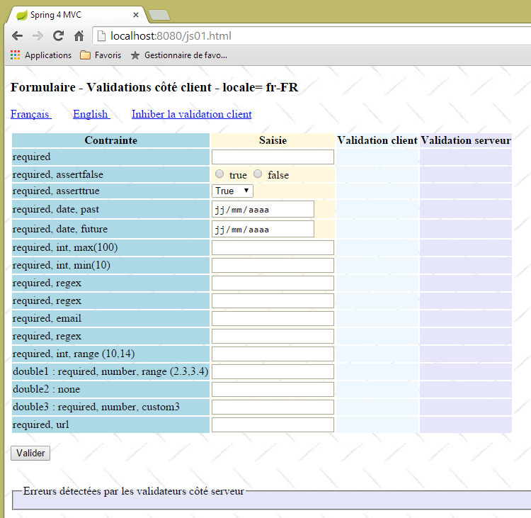
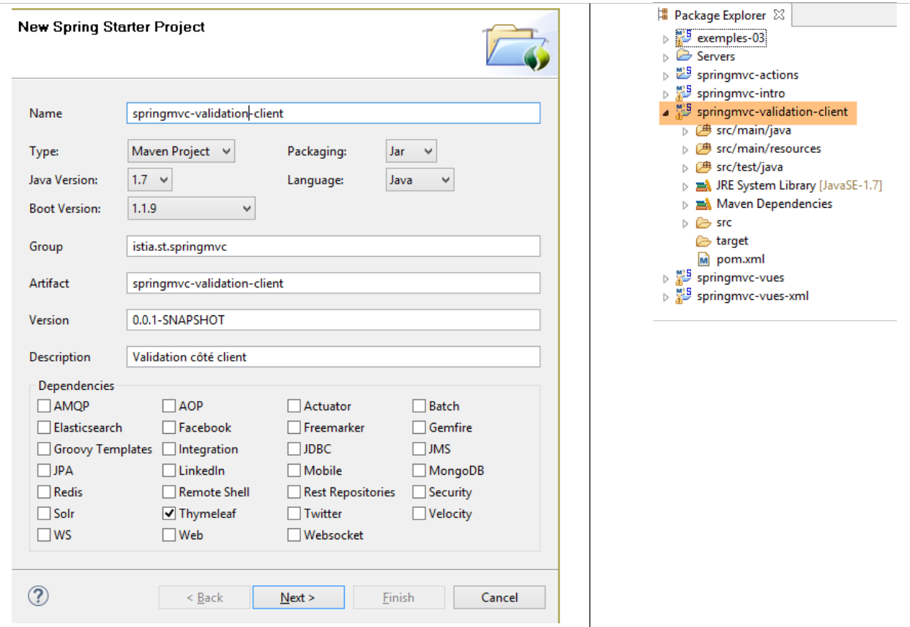
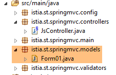
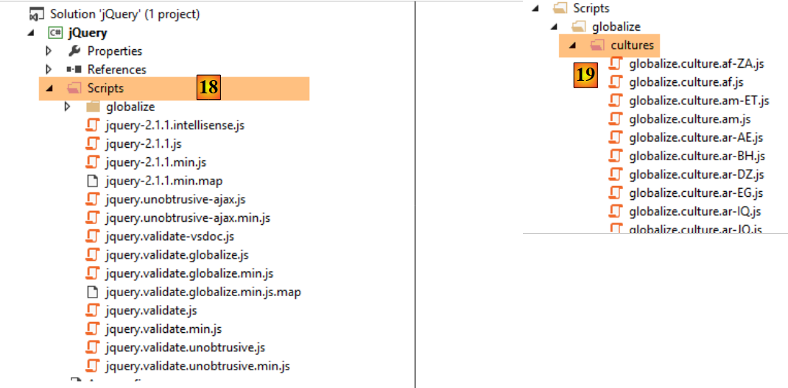
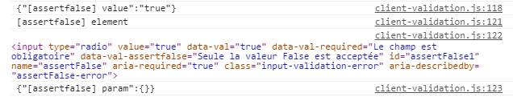
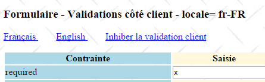

6. التحقق من صحة JavaScript من جانب العميل
في الفصل السابق، تناولنا عملية التحقق من الصحة من جانب الخادم. فلنعد إلى بنية تطبيق Spring MVC:
 |
قاعدة البيانات
حتى الآن، لم تحتوي الصفحات المرسلة إلى العميل على أي جافا سكريبت. سنستكشف الآن هذه التقنية، التي ستسمح لنا في البداية بإجراء التحقق من صحة البيانات من جانب العميل. المبدأ هو كما يلي:
- تقوم JavaScript بإرسال القيم إلى خادم الويب؛
- وبالتالي قبل إرسال هذا الطلب، يمكنها التحقق من صحة البيانات ومنع الإرسال إذا كانت البيانات غير صالحة؛
سنستخدم النموذج الذي قمنا بالتحقق من صحته على جانب الخادم. سنقدم الآن خيار التحقق من صحته على جانب العميل وجانب الخادم على حد سواء.
ملاحظة: هذا موضوع معقد. يمكن للقراء غير المهتمين بهذا الموضوع تخطي هذا الجزء والانتقال مباشرة إلى الفقرة 7.
6.1. ميزات المشروع
نقدم بعض العروض للمشروع لإبراز ميزاته. يمكن الوصول إلى الصفحة الأولية عبر عنوان URL [http://localhost:8080/js01.html]
 |
تم تنفيذ عمليات التحقق من الصحة على كلا الجانبين: العميل والخادم. ونظرًا لأن طلب POST لا يحدث إلا إذا تم اعتبار القيم صالحة على جانب العميل، فإن عمليات التحقق من الصحة على جانب الخادم تنجح دائمًا. ولذلك، قمنا بتوفير رابط لتعطيل عمليات التحقق من الصحة على جانب العميل. وعند التواجد في هذا الوضع، يكون السلوك مماثلاً لما درسناه سابقًا. وإليك مثال على ذلك:
123  |
- في [1]، القيم المدخلة؛
- في [2]، رسائل الخطأ المتعلقة بالمدخلات؛
- في [3]، ملخص للأخطاء، مع ما يلي لكل منها:
- اسم الحقل الذي تم التحقق من صحته،
- رمز الخطأ،
- الرسالة الافتراضية لرمز الخطأ هذا؛
الآن، دعونا نُفعّل التحقق من صحة البيانات من جانب العميل:
 |
- في [1]، القيم التي تم إدخالها. لاحظ أن الإدخالات غير الصحيحة لها نمط محدد؛
- في [2]، رسائل الخطأ المرتبطة بالمدخلات غير الصحيحة. وهي مطابقة لتلك التي يولدها الخادم؛
- في [3-4]، لا يوجد شيء هناك لأنه طالما توجد إدخالات غير صحيحة، لا يتم إرسال طلب POST إلى الخادم؛
6.2. التحقق من صحة البيانات من جانب الخادم
6.2.1. التكوين
نبدأ بإنشاء مشروع Maven جديد [springmvc-validation-client]:
 |
نقوم بتطوير المشروع على النحو التالي:
 |
تقوم فئة [Config] بتكوين المشروع. وهي مطابقة لما كانت عليه في المشاريع السابقة:
package istia.st.springmvc.config;
import java.util.Locale;
import org.springframework.boot.autoconfigure.EnableAutoConfiguration;
import org.springframework.context.MessageSource;
import org.springframework.context.annotation.Bean;
import org.springframework.context.annotation.ComponentScan;
import org.springframework.context.annotation.Configuration;
import org.springframework.context.support.ResourceBundleMessageSource;
import org.springframework.web.servlet.config.annotation.InterceptorRegistry;
import org.springframework.web.servlet.config.annotation.WebMvcConfigurerAdapter;
import org.springframework.web.servlet.i18n.CookieLocaleResolver;
import org.springframework.web.servlet.i18n.LocaleChangeInterceptor;
import org.thymeleaf.spring4.SpringTemplateEngine;
import org.thymeleaf.spring4.templateresolver.SpringResourceTemplateResolver;
@Configuration
@ComponentScan({ "istia.st.springmvc.controllers", "istia.st.springmvc.models" })
@EnableAutoConfiguration
public class Config extends WebMvcConfigurerAdapter {
@Bean
public MessageSource messageSource() {
ResourceBundleMessageSource messageSource = new ResourceBundleMessageSource();
messageSource.setBasename("i18n/messages");
return messageSource;
}
@Bean
public LocaleChangeInterceptor localeChangeInterceptor() {
LocaleChangeInterceptor localeChangeInterceptor = new LocaleChangeInterceptor();
localeChangeInterceptor.setParamName("lang");
return localeChangeInterceptor;
}
@Override
public void addInterceptors(InterceptorRegistry registry) {
registry.addInterceptor(localeChangeInterceptor());
}
@Bean
public CookieLocaleResolver localeResolver() {
CookieLocaleResolver localeResolver = new CookieLocaleResolver();
localeResolver.setCookieName("lang");
localeResolver.setDefaultLocale(new Locale("fr"));
return localeResolver;
}
@Bean
public SpringResourceTemplateResolver templateResolver() {
SpringResourceTemplateResolver templateResolver = new SpringResourceTemplateResolver();
templateResolver.setPrefix("classpath:/templates/");
templateResolver.setSuffix(".xml");
templateResolver.setTemplateMode("HTML5");
templateResolver.setCacheable(true);
templateResolver.setCharacterEncoding("UTF-8");
return templateResolver;
}
@Bean
SpringTemplateEngine templateEngine(SpringResourceTemplateResolver templateResolver) {
SpringTemplateEngine templateEngine = new SpringTemplateEngine();
templateEngine.setTemplateResolver(templateResolver);
return templateEngine;
}
}
الفئة [Main] هي الفئة القابلة للتنفيذ في المشروع:
package istia.st.springmvc.main;
import istia.st.springmvc.config.Config;
import java.util.Arrays;
import org.springframework.boot.SpringApplication;
import org.springframework.context.ApplicationContext;
public class Main {
public static void main(String[] args) {
// launch the application
ApplicationContext context = SpringApplication.run(Config.class, args);
// displays the list of beans found by Spring
System.out.println("Liste des beans Spring");
String[] beanNames = context.getBeanDefinitionNames();
Arrays.sort(beanNames);
for (String beanName : beanNames) {
System.out.println(beanName);
}
}
}
- السطر 13: يتم تشغيل Spring Boot باستخدام ملف التكوين [Config]؛
- الأسطر 15–20: في هذا المثال، نعرض كيفية عرض قائمة الكائنات التي يديرها Spring. قد يكون هذا مفيدًا إذا شعرت يومًا أن Spring لا يدير أحد مكوناتك. إنها طريقة للتحقق من ذلك. كما أنها طريقة للتحقق من التكوين التلقائي الذي يقوم به Spring Boot. على وحدة التحكم، سترى قائمة مشابهة لما يلي:
لقد قمنا بتمييز الكائنات المحددة في فئة [Config].
6.2.2. نموذج النموذج
لنواصل استكشاف المشروع:
 |
فئة [Form01] هي الفئة التي ستستقبل القيم المرسلة. وهي كما يلي:
package istia.st.springmvc.models;
import java.util.Date;
import javax.validation.constraints.AssertFalse;
import javax.validation.constraints.AssertTrue;
import javax.validation.constraints.DecimalMax;
import javax.validation.constraints.DecimalMin;
import javax.validation.constraints.Future;
import javax.validation.constraints.Max;
import javax.validation.constraints.Min;
import javax.validation.constraints.NotNull;
import javax.validation.constraints.Past;
import javax.validation.constraints.Pattern;
import javax.validation.constraints.Size;
import org.hibernate.validator.constraints.Email;
import org.hibernate.validator.constraints.Length;
import org.hibernate.validator.constraints.NotBlank;
import org.hibernate.validator.constraints.Range;
import org.hibernate.validator.constraints.URL;
import org.springframework.format.annotation.DateTimeFormat;
public class Form01 {
// posted values
@NotNull
@AssertFalse
private Boolean assertFalse;
@NotNull
@AssertTrue
private Boolean assertTrue;
@NotNull
@Future
@DateTimeFormat(pattern = "yyyy-MM-dd")
private Date dateInFuture;
@NotNull
@Past
@DateTimeFormat(pattern = "yyyy-MM-dd")
private Date dateInPast;
@NotNull
@Max(value = 100)
private Integer intMax100;
@NotNull
@Min(value = 10)
private Integer intMin10;
@NotNull
@NotBlank
private String strNotEmpty;
@NotNull
@Size(min = 4, max = 6)
private String strBetween4and6;
@NotNull
@Pattern(regexp = "^\\d{2}:\\d{2}:\\d{2}$")
private String hhmmss;
@NotNull
@Email
@NotBlank
private String email;
@NotNull
@Length(max = 4, min = 4)
private String str4;
@Range(min = 10, max = 14)
@NotNull
private Integer int1014;
@NotNull
@DecimalMax(value = "3.4")
@DecimalMin(value = "2.3")
private Double double1;
@NotNull
private Double double2;
@NotNull
private Double double3;
@URL
@NotBlank
private String url;
// customer validation
private boolean clientValidation = true;
// local
private String lang;
...
}
نرى أدوات التحقق من الصحة التي صادفناها من قبل. سنقدم أيضًا مفهوم التحقق من الصحة المخصص. هذا نوع من التحقق من الصحة لا يمكن معالجته بواسطة أداة تحقق محددة مسبقًا. هنا، سنشترط أن يكون [double1+double2] ضمن النطاق [10,13].
6.2.3. وحدة التحكم
وحدة التحكم [JsController] هي كما يلي:
 |
package istia.st.springmvc.controllers;
import istia.st.springmvc.models.Form01;
...
@Controller
public class JsController {
@RequestMapping(value = "/js01", method = RequestMethod.GET, produces = "text/html; charset=UTF-8")
public String js01(Form01 formulaire, Locale locale, Model model) {
setModel(formulaire, model, locale, null);
return "vue-01";
}
...
// preparing the view-01 model
private void setModel(Form01 formulaire, Model model, Locale locale, String message) {
...
}
}
- السطر 9، الإجراء [/js01]؛
- السطر 10: يتم إنشاء مثيل لكائن من النوع [Form01] ووضعه تلقائيًا في النموذج، مرتبطًا بالمفتاح [form01]؛
- السطر 10: يتم إدخال الإعدادات المحلية والنموذج في المعلمات؛
- السطر 11: باستخدام هذه المعلومات، يتم إعداد النموذج؛
- السطر 12: يتم عرض العرض [vue-01.xml]؛
طريقة [setModel] هي كما يلي:
// preparing the view-01 model
private void setModel(Form01 formulaire, Model model, Locale locale, String message) {
// we only manage fr-FR, en-US locales
String language = locale.getLanguage();
String country = null;
if (language.equals("fr")) {
country = "FR";
formulaire.setLang("fr_FR");
}
if (language.equals("en")) {
country = "US";
formulaire.setLang("en_US");
}
model.addAttribute("locale", String.format("%s-%s", language, country));
// any message
if (message != null) {
model.addAttribute("message", message);
}
}
- الغرض من طريقة [setModel] هو إضافة ما يلي إلى النموذج:
- معلومات حول الإعدادات المحلية،
- الرسالة التي تم تمريرها كمعلمة أخيرة؛
- السطر 14: نضع معلومات حول الإعدادات المحلية (اللغة، البلد) في النموذج؛
- الأسطر 16–18: يتم وضع أي رسالة يتم تمريرها كمعلمة في الإعدادات المحلية؛
- السطور 8 و12: يتم أيضًا تخزين معلومات الإعدادات المحلية في النموذج [Form01]. سيستخدم JavaScript هذه المعلومات؛
سيتم إرسال القيم التي تم إدخالها في النموذج [vue-01.xml] إلى الإجراء [/js02] التالي:
@RequestMapping(value = "/js02", method = RequestMethod.POST, produces = "text/html; charset=UTF-8")
public String js02(@Valid Form01 formulaire, BindingResult result, RedirectAttributes redirectAttributes, Locale locale, Model model) {
Form01Validator validator = new Form01Validator(10, 13);
validator.validate(formulaire, result);
...
}
- السطر 2: يضمن التعليق التوضيحي [@Valid Form01 form] أن القيم المرسلة ستُقدم إلى أدوات التحقق من صحة البيانات الخاصة بفئة [Form01]. ونعلم أن هناك عملية تحقق محددة [double1+double2] ضمن النطاق [10,13]. وعندما نصل إلى السطر 3، لم يتم إجراء عملية التحقق هذه بعد؛
- السطر 3: نقوم بإنشاء كائن [Form01Validator] التالي:
 |
package istia.st.springmvc.validators;
import istia.st.springmvc.models.Form01;
import org.springframework.validation.Errors;
import org.springframework.validation.Validator;
public class Form01Validator implements Validator {
// validation interval
private double min;
private double max;
// manufacturer
public Form01Validator(double min, double max) {
this.min = min;
this.max = max;
}
@Override
public boolean supports(Class<?> classe) {
return Form01.class.equals(classe);
}
@Override
public void validate(Object form, Errors errors) {
// validated object
Form01 form01 = (Form01) form;
// the value of [double1]
Double double1 = form01.getDouble1();
if (double1 == null) {
return;
}
// the value of [double2]
Double double2 = form01.getDouble2();
if (double2 == null) {
return;
}
// [double1+double2]
double somme = double1 + double2;
// validation
if (somme < min || somme > max) {
errors.rejectValue("double2", "form01.double2", new Double[] { min, max }, null);
}
}
}
- السطر 8: لتنفيذ عملية تحقق محددة، نقوم بإنشاء فئة تنفذ واجهة Spring [Validator]. تحتوي هذه الواجهة على طريقتين: [supports] في السطر 21 و[validate] في السطر 26؛
- الأسطر 21–23: تأخذ طريقة [supports] كائنًا من النوع [Class]. يجب أن ترجع القيمة true للإشارة إلى أنها تدعم هذه الفئة، وإلا ترجع القيمة false؛
- السطر 22: نحدد أن فئة [Form01Validator] تتحقق من صحة الكائنات من النوع [Form01] فقط؛
- الأسطر 15–18: تذكر أننا نريد تنفيذ القيد [double1+double2] ضمن الفاصل [10,13]. بدلاً من حصر أنفسنا في هذا الفاصل، سنقوم بفحص القيد [double1+double2] ضمن الفاصل [min, max]. لهذا السبب لدينا منشئ به هذين المعلمتين؛
- السطر 26: يتم استدعاء الأسلوب [validate] بمثيل للكائن الذي يتم التحقق من صحته — في هذه الحالة، مثيل لـ [Form01] — وبمجموعة الأخطاء المعروفة حاليًا [Errors errors]. إذا فشل التحقق من الصحة الذي يقوم به الأسلوب [validate]، فيجب عليه إنشاء عنصر جديد في مجموعة [Errors errors]؛
- السطر 43: فشل التحقق من الصحة. نضيف عنصرًا إلى مجموعة [Errors errors] باستخدام طريقة [Errors.rejectValue]، التي تكون معلماتها كما يلي:
- المعلمة 1: عادةً ما تكون اسم الحقل الذي يحتوي على الخطأ. هنا قمنا باختبار الحقول [double1، double2]. يمكننا استخدام أي منهما،
- أو رسالة الخطأ المرتبطة به، أو بشكل أكثر دقة مفتاحه في ملفات الرسائل الخارجية:
[messages_fr.properties]
form01.double2=[double2+double1] doit être dans l''intervalle [{0},{1}]
[messages_en.properties]
form01.double2=[double2+double1] must be in [{0},{1}
هنا لدينا رسائل معلمة بـ {0} و {1}. لذلك، يجب توفير قيمتين لهذه الرسالة. وهذا ما تقوم به المعلمة الثالثة لطريقة [Errors.rejectValue].
- المعلمة الرابعة هي رسالة افتراضية للخطأ؛
لنعد إلى الإجراء [/js02]:
@RequestMapping(value = "/js02", method = RequestMethod.POST, produces = "text/html; charset=UTF-8")
public String js02(@Valid Form01 formulaire, BindingResult result, RedirectAttributes redirectAttributes, Locale locale, Model model) {
Form01Validator validator = new Form01Validator(10, 13);
validator.validate(formulaire, result);
if (result.hasErrors()) {
StringBuffer buffer = new StringBuffer();
for (ObjectError error : result.getAllErrors()) {
buffer.append(String.format("[name=%s,code=%s,message=%s]", error.getObjectName(), error.getCode(), error.getDefaultMessage()));
}
setModel(formulaire, model, locale, buffer.toString());
return "vue-01";
} else {
redirectAttributes.addFlashAttribute("form01", formulaire);
return "redirect:/js01.html";
}
}
- السطر 4: يتم تنفيذ أداة التحقق من الصحة [Form01Validator] بالمعلمات التالية:
- المعلمة 1: الكائن الذي يتم التحقق من صحته،
- المعلمة 2: قائمة الأخطاء الخاصة بهذا الكائن. هذا هو كائن [BindingResult result] الذي تم تمريره كمعلمة إلى الإجراء. إذا فشل التحقق من الصحة، فسيحتوي هذا الكائن على خطأ إضافي؛
- السطر 5: نتحقق من وجود أي أخطاء في التحقق من الصحة؛
- الأسطر 7-10: نكرر قائمة الأخطاء لتخزين ما يلي لكل خطأ:
- اسم الكائن الذي تم التحقق من صحته،
- رمز الخطأ الخاص به،
- رسالة الخطأ الافتراضية الخاصة به؛
- السطر 10: باستخدام هذه المعلومات، نقوم بإنشاء قالب العرض [vue-01.xml]. هذه المرة، توجد رسالة — وهي النسخة المجمعة والمختصرة من رسائل الخطأ المختلفة؛
- الأسطر 12-15: إذا كانت جميع القيم المرسلة صالحة، يتم إعادة توجيه العميل إلى الإجراء [/js01] عن طريق تعيين القيم المرسلة كسمات Flash؛
6.2.4. العرض
العرض [view-01.xml] معقد. سنعرض جزءًا صغيرًا منه فقط:
<!DOCTYPE HTML>
<html xmlns:th="http://www.thymeleaf.org">
<head>
<title>Spring 4 MVC</title>
<meta http-equiv="Content-Type" content="text/html; charset=UTF-8" />
<link rel="stylesheet" href="/css/form01.css" />
<script type="text/javascript" src="/js/jquery/jquery-1.10.2.min.js"></script>
...
</head>
<body>
<!-- title -->
<h3>
<span th:text="#{form01.title}"></span>
<span th:text="${locale}"></span>
</h3>
<!-- menu -->
<p>
...
</p>
<!-- form -->
<form action="/someURL" th:action="@{/js02.html}" method="post" th:object="${form01}" name="form" id="form">
<table>
<thead>
<tr>
<th class="col1" th:text="#{form01.col1}">Contrainte</th>
<th class="col2" th:text="#{form01.col2}">Saisie</th>
<th class="col3" th:text="#{form01.col3}">Validation client</th>
<th class="col4" th:text="#{form01.col4}">Validation serveur</th>
</tr>
</thead>
<tbody>
<!-- required -->
<tr>
<td class="col1">required</td>
<td class="col2">
<input type="text" th:field="*{strNotEmpty}" data-val="true" th:attr="data-val-required=#{NotNull}" />
</td>
<td class="col3">
<span class="field-validation-valid" data-valmsg-for="strNotEmpty" data-valmsg-replace="true"></span>
</td>
<td class="col4">
<span th:if="${#fields.hasErrors('strNotEmpty')}" th:errors="*{strNotEmpty}" class="error">Donnée erronée</span>
</td>
</tr>
...
</tbody>
</table>
<p>
<!-- validation button -->
<input type="submit" th:value="#{form01.valider}" value="Valider" onclick="javascript:postForm01()" />
</p>
</form>
<!-- server-side validator message -->
<br/>
<fieldset class="fieldset">
<legend>
<span th:text="#{server.error.message}"></span>
</legend>
<span th:text="${message}" class="error"></span>
</fieldset>
</body>
</html>
تستخدم هذه الصفحة عددًا من الرسائل الموجودة في ملفات الرسائل الخارجية:
[messages_fr.properties]
form01.title=Formulaire - Validations côté client - locale=
form01.col1=Contrainte
form01.col2=Saisie
form01.col3=Validation client
form01.col4=Validation serveur
form01.valider=Valider
server.error.message=Erreurs détectées par les validateurs côté serveur
[messages_en.properties]
form01.title=Form - Client side validation - locale=
form01.col1=Constraint
form01.col2=Input
form01.col3=Client validation
form01.col4=Server validation
form01.valider=Validate
server.error.message=Errors detected by the validators on the server side
لنعد إلى كود الصفحة:
- السطر 8: عدد كبير من استيرادات مكتبات JavaScript التي يمكننا تجاهلها هنا؛
- السطر 14: يعرض الإعدادات المحلية التي حددها الخادم في القالب؛
- السطر 59: يعرض الرسالة التي تم تعيينها في القالب بواسطة الخادم؛
الرمز الموجود في الأسطر 33–44 جديد. دعونا ندرسه:
<!-- required -->
<tr>
<td class="col1">required</td>
<td class="col2">
<input type="text" th:field="*{strNotEmpty}" data-val="true" th:attr="data-val-required=#{NotNull}" />
</td>
<td class="col3">
<span class="field-validation-valid" data-valmsg-for="strNotEmpty" data-valmsg-replace="true"></span>
</td>
<td class="col4">
<span th:if="${#fields.hasErrors('strNotEmpty')}" th:errors="*{strNotEmpty}" class="error">Donnée erronée</span>
</td>
</tr>
قد يكون أبسط نهج هو النظر إلى كود HTML الذي تم إنشاؤه بواسطة مقطع Thymeleaf هذا:
<!-- required -->
<tr>
<td class="col1">required</td>
<td class="col2">
<input type="text" data-val="true" data-val-required="Le champ est obligatoire" id="strNotEmpty" name="strNotEmpty" value="" />
</td>
<td class="col3">
<span class="field-validation-valid" data-valmsg-for="strNotEmpty" data-valmsg-replace="true"></span>
</td>
<td class="col4">
</td>
</tr>
سنستخدم مكتبة للتحقق من الصحة من جانب العميل تسمى [jquery.validate]. جميع سمات [data-x] مخصصة لهذه المكتبة. عندما يكون التحقق من الصحة من جانب العميل معطلاً، لن يتم استخدام هذه السمات. لذا، في الوقت الحالي، لا داعي لفهمها. يمكننا ببساطة التركيز على سطر Thymeleaf التالي:
<input type="text" th:field="*{strNotEmpty}" data-val="true" th:attr="data-val-required=#{NotNull}" />
الذي يولد سطر HTML التالي:
<input type="text" data-val="true" data-val-required="Le champ est obligatoire" id="strNotEmpty" name="strNotEmpty" value="" />
كما ذكرنا أعلاه، توجد مشكلة في إنشاء السمة [data-val-required="هذا الحقل مطلوب"]. ويرجع ذلك إلى أن القيمة المرتبطة بالسمة تأتي من ملفات رسائل خارجية. ولذلك، نضطر إلى استخدام تعبير Thymeleaf للحصول عليها. والتعبير هو كما يلي: [th:attr="data-val-required=#{NotNull}"]. يتم تقييم هذا التعبير، ويتم إدراج قيمته كما هي في علامة HTML التي تم إنشاؤها. ويُسمى [th:attr] لأنه يُستخدم لإنشاء سمات غير محددة مسبقًا في Thymeleaf. لقد صادفنا سمات محددة مسبقًا [th:text، th:value، th:class، ...] ولكن لا توجد سمة [th:data-val-required].
6.2.5. ورقة الأنماط
أعلاه، نرى فئات CSS مثل [class="field-validation-valid"]. تستخدم مكتبة التحقق من صحة JavaScript بعض هذه الفئات. وهي محددة في ملف [form01.css] التالي:
 |
@CHARSET "UTF-8";
/*styles perso*/
body {
background-image: url("/images/standard.jpg");
}
.col1 {
background: lightblue;
}
.col2 {
background: Cornsilk;
}
.col3 {
background: AliceBlue;
}
.col4 {
background: Lavender;
}
.error {
color: red;
}
.fieldset{
background: Lavender;
}
/* Styles for validation helpers
-----------------------------------------------------------*/
.field-validation-error {
color: #f00;
}
.field-validation-valid {
display: none;
}
.input-validation-error {
border: 1px solid #f00;
background-color: #fee;
}
.validation-summary-errors {
font-weight: bold;
color: #f00;
}
.validation-summary-valid {
display: none;
}
6.3. التحقق من الصحة من جانب العميل
6.3.1. أساسيات jQuery و JavaScript
يتم التحقق من الصحة من جانب العميل باستخدام JavaScript. سنستخدم إطار عمل jQuery، الذي يوفر العديد من الوظائف التي تبسط تطوير JavaScript. سنغطي أساسيات jQuery اللازمة لفهم البرامج النصية في هذا الفصل والفصول التالية.
نقوم بإنشاء ملف HTML ثابت [JQuery-01.html] ونضعه في مجلد [static / views]:
 |
سيحتوي هذا الملف على المحتوى التالي:
<!DOCTYPE html>
<html xmlns="http://www.w3.org/1999/xhtml">
<head>
<meta http-equiv="Content-Type" content="text/html; charset=utf-8" />
<title>JQuery-01</title>
<script type="text/javascript" src="/js/jquery-1.11.1.min.js"></script>
</head>
<body>
<h3>Rudiments de JQuery</h3>
<div id="element1">
Elément 1
</div>
</body>
</html>
- السطر 6: استيراد jQuery؛
- الأسطر 10–12: عنصر صفحة بمعرف [element1]. سنعمل مع هذا العنصر.
نحتاج إلى تنزيل الملف [jquery-1.11.1.min.js]. يمكنك العثور على أحدث إصدار من jQuery على الرابط [http://jquery.com/download/]:

سنضع الملف الذي تم تنزيله في المجلد [static / js]:
 |
بمجرد الانتهاء من ذلك، افتح العرض الثابت [jQuery-01.html] في متصفح Chrome [1-2]:
 |
في Google Chrome، اضغط على [Ctrl-Shift-I] لفتح أدوات المطور [3]. تتيح لك علامة التبويب [Console] [4] تشغيل كود JavaScript. أدناه، نقدم أوامر JavaScript التي يجب كتابتها ونشرح وظائفها.
JS | result |
|
: يُرجع مجموعة جميع العناصر التي تحمل المعرف [element1]، لذا عادةً ما تكون المجموعة مكونة من عنصر واحد أو لا شيء، لأنه لا يمكن وجود معرفين متطابقين في صفحة HTML واحدة. |  |
|
: يعيّن النص [blabla] لجميع العناصر في المجموعة. يؤدي هذا إلى تغيير المحتوى المعروض على الصفحة |  |
|
يخفي العناصر في المجموعة. لم يعد النص [blabla] معروضًا. |  |
|
: يعرض المجموعة مرة أخرى. وهذا يسمح لنا برؤية أن العنصر الذي يحمل المعرف [element1] له سمة CSS style='display: none;'، مما يؤدي إلى إخفاء العنصر. | |
|
: يعرض عناصر المجموعة. يظهر النص [blabla] مرة أخرى. السمة CSS style='display: block;' هي المسؤولة عن هذا العرض. |  |
|
: يحدد سمة لجميع العناصر في المجموعة. السمة هنا هي [style] وقيمتها هي [color: red]. يتحول النص [blabla] إلى اللون الأحمر. |  |
 | |
 |
لاحظ أن عنوان URL للمتصفح لم يتغير خلال كل هذه العمليات. لم يكن هناك أي اتصال بخادم الويب. كل شيء يحدث داخل المتصفح. والآن، دعونا نلقي نظرة على كود مصدر الصفحة:
<!DOCTYPE html>
<html xmlns="http://www.w3.org/1999/xhtml">
<head>
<meta http-equiv="Content-Type" content="text/html; charset=utf-8" />
<title>JQuery-01</title>
<script type="text/javascript" src="/js/jquery-1.11.1.min.js"></script>
</head>
<body>
<h3>Rudiments de JQuery</h3>
<div id="element1">
Elément 1
</div>
</body>
</html>
هذا هو النص الأصلي. وهو لا يعكس التغييرات التي تم إجراؤها على العنصر في الأسطر 10–12. من المهم تذكر ذلك عند تصحيح أخطاء JavaScript. في مثل هذه الحالات، غالبًا ما يكون من غير الضروري عرض شفرة المصدر للصفحة المعروضة.
لدينا الآن ما يكفي من المعرفة لفهم نصوص JavaScript التالية.
6.3.2. مكتبات التحقق من صحة JS
سنستخدم مكتبات من نظام jQuery. هناك عدد من المشاريع التي تدور حول jQuery، والتي بدورها تؤدي إلى ظهور مكتبات. سنستخدم مكتبة التحقق [jquery.validate.unobstrusive] التي أنشأتها Microsoft وتبرعت بها لمؤسسة jQuery. سنشير إليها فيما بعد باسم مكتبة التحقق MS أو، ببساطة، مكتبة MS. للحصول عليها، تحتاج إلى بيئة Microsoft Visual Studio. لم أرَ أي طريقة أخرى للحصول عليها. يمكنك استخدام إصدار مجاني مثل [Visual Studio Community] [http://www.visualstudio.com/en-us/news/vs2013-community-vs.aspx] (ديسمبر 2014). يمكن للقراء غير المهتمين باتباع الخطوات التالية الحصول على هذه المكتبة والمكتبات التي تعتمد عليها من الأمثلة المتوفرة على موقع الويب الخاص بهذا المستند.
قم بإنشاء مشروع وحدة تحكم باستخدام Visual Studio [1-4]:
|

 |
- في [5]، مشروع وحدة التحكم؛
- في [6-7]: سنضيف حزم [NuGet] إلى المشروع. [NuGet] هي ميزة في Visual Studio تتيح لك تنزيل المكتبات في شكل ملفات DLL وكذلك مكتبات JavaScript.
 |
- في [9-10]، ابحث باستخدام الكلمة الرئيسية [jQuery]؛
- في [11-13]، قم بتنزيل مكتبات JavaScript المطلوبة للتحقق من صحة البيانات من جانب العميل بالترتيب الموضح؛
- في [14]، قم أيضًا بتنزيل مكتبة [Microsoft jQuery Unobtrusive Ajax]، التي سنستخدمها بعد قليل؛
 |
- في [15-16]، ابحث عن الحزم باستخدام الكلمة الرئيسية [globalize]؛
- في [17]، قم بتنزيل مكتبة [jQuery.Validation.Globalize]؛
 |
أدت عمليات التنزيل المختلفة هذه إلى تثبيت عدد من مكتبات JavaScript في مجلد [Scripts] الخاص بالمشروع [18]. ليست جميعها مفيدة. يأتي كل ملف في نسختين:
- [js]: النسخة القابلة للقراءة من المكتبة؛
- [min.js]: النسخة غير القابلة للقراءة، أو ما يُسمى النسخة "المصغرة" من المكتبة. وهي ليست غير قابلة للقراءة تمامًا — فهي نص — ولكنها غير مفهومة. هذه هي النسخة التي يجب استخدامها في الإنتاج لأن هذا الملف أصغر من النسخة [js] المقابلة، وبالتالي يحسن سرعة الاتصال بين العميل والخادم؛
إصدارات [min.map] ليست ضرورية. في مجلد [cultures]، يمكنك الاحتفاظ فقط بالثقافات التي يديرها التطبيق.
باستخدام مستكشف Windows، انسخ هذه الملفات إلى مجلد [static/js/jquery] في مشروع [springmvc-validation-client] واحتفظ فقط بالملفات المفيدة [20]:
 |
في [21]، احتفظ بـإعدادات لغة واحدة فقط:
- [fr-FR]: الفرنسية (فرنسا)؛
- [en-US]: الإنجليزية الأمريكية؛
6.3.3. استيراد مكتبات JS للتحقق من الصحة
لاستخدام هذه المكتبات، يجب استيرادها بواسطة عرض [vue-01.xml]:
<head>
<title>Spring 4 MVC</title>
<meta http-equiv="Content-Type" content="text/html; charset=UTF-8" />
<link rel="stylesheet" href="/css/form01.css" />
<script type="text/javascript" src="/js/jquery/jquery-2.1.1.min.js"></script>
<script type="text/javascript" src="/js/jquery/jquery.validate.min.js"></script>
<script type="text/javascript" src="/js/jquery/jquery.validate.unobtrusive.min.js"></script>
<script type="text/javascript" src="/js/jquery/globalize/globalize.js"></script>
<script type="text/javascript" src="/js/jquery/globalize/cultures/globalize.culture.fr-FR.js"></script>
<script type="text/javascript" src="/js/jquery/globalize/cultures/globalize.culture.en-US.js"></script>
<script type="text/javascript" src="/js/client-validation.js"></script>
<script type="text/javascript" src="/js/local.js"></script>
<script th:inline="javascript">
/*<![CDATA[*/
var culture = [[${locale}]];
Globalize.culture(culture);
/*]]>*/
</script>
</head>
- السطر 11: استيراد ملف JavaScript لم نناقشه بعد؛
- الأسطر 13–18: نصوص JavaScript التي يفسرها Thymelaf. وهي تتعامل مع الإعدادات المحلية من جانب العميل؛
6.3.4. إدارة الإعدادات المحلية من جانب العميل
يتم التعامل مع الترجمة من جانب العميل بواسطة البرنامج النصي JavaScript التالي:
<script th:inline="javascript">
/*<![CDATA[*/
var culture = [[${locale}]];
Globalize.culture(culture);
/*]]>*/
</script>
- السطران 3-4: كود JavaScript يحتوي على تعبير Thymeleaf [[${locale}]]. لاحظ الصيغة المحددة لهذا التعبير، حيث إنه مكتوب بلغة JavaScript. سيتم استبدال التعبير [[${locale}]] بقيمة مفتاح [locale] في قالب العرض؛
والنتيجة في إخراج HTML الذي تم إنشاؤه بواسطة هذه الأسطر هي كما يلي:
<script>
/*<![CDATA[*/
var culture = 'en-US';
Globalize.culture(culture);
/*]]>*/
</script>
تحدد السطران 3 و4 الثقافة من جانب العميل. نحن ندعم اثنتين فقط: [fr-FR] و[en-US]. ولهذا السبب قمنا باستيراد ملفين للثقافة فقط:
<script type="text/javascript" src="/js/jquery/globalize/cultures/globalize.culture.fr-FR.js"></script>
<script type="text/javascript" src="/js/jquery/globalize/cultures/globalize.culture.en-US.js"></script>
يتم تعيين الثقافة التي سيتم استخدامها على جانب العميل من جانب الخادم. لنعد إلى كود جانب الخادم:
@RequestMapping(value = "/js01", method = RequestMethod.GET, produces = "text/html; charset=UTF-8")
public String js01(Form01 formulaire, Locale locale, Model model) {
setModel(formulaire, model, locale, null);
return "vue-01";
}
// preparing the view-01 model
private void setModel(Form01 formulaire, Model model, Locale locale, String message) {
// we only manage fr-FR, en-US locales
String language = locale.getLanguage();
String country = null;
if (language.equals("fr")) {
country = "FR";
formulaire.setLang("fr_FR");
}
if (language.equals("en")) {
country = "US";
formulaire.setLang("en_US");
}
model.addAttribute("locale", String.format("%s-%s", language, country));
...
}
- السطر 20: يتم تعيين الإعدادات المحلية [fr-FR] أو [en-US] في قالب العرض [vue-01.xml] (السطر 4). لاحظ مصدرًا محتملاً للمشاكل. في حين يُشار إلى الإعدادات المحلية الفرنسية بـ [fr-FR] على جانب العميل، يُشار إليها بـ [fr_FR] على جانب الخادم. ولهذا السبب، في السطرين 14 و 18، يتم تخزينها بهذه الصيغة في الكائن [Form01] الذي يستقبل القيم المنشورة؛
لاحظ النقطة المهمة التالية. البرنامج النصي
<script>
/*<![CDATA[*/
var culture = 'en-US';
Globalize.culture(culture);
/*]]>*/
</script>
يغير ثقافة العميل بناءً على الإعدادات المحلية المرسلة من الخادم. هذا لا يؤدي إلى تدويل الرسائل المعروضة على الصفحة. بل يغير فقط كيفية تفسير بعض المعلومات التي تعتمد على ثقافة البلد. مع الثقافة [fr_FR]، يكون الرقم الحقيقي [12.78] صالحًا، في حين أنه غير صالح مع الثقافة [en-US]. لذلك يجب عليك كتابة [12.78]. وبالمثل، فإن التاريخ [12/01/2014] هو تاريخ صالح في الثقافة [fr-FR]، بينما في الثقافة [en-US] يجب عليك كتابة [01/12/2014]. تتعامل الملفات الموجودة في مجلد [jquery / globalize] مع هذه الأنواع من المشكلات:
 |
تتم معالجة تدويل رسائل الخطأ من جانب الخادم حصريًا. سنلاحظ أن صفحة HTML/JS تعرض رسائل الخطأ المطابقة للإعدادات الإقليمية التي يديرها الخادم: باللغة الفرنسية للإعدادات الإقليمية [fr_FR] وباللغة الإنجليزية للإعدادات الإقليمية [en_US].
6.3.5. ملفات الرسائل
تستخدم طريقة العرض [vue-01.xml] الرسائل الدولية التالية:
 |
[messages_fr.properties]
NotNull=Le champ est obligatoire
NotEmpty=La donnée ne peut être vide
NotBlank=La donnée ne peut être vide
typeMismatch=Format invalide
Future.form01.dateInFuture=La date doit être postérieure ou égale à celle d''aujourd'hui
Past.form01.dateInPast=La date doit être antérieure ou égale à celle d''aujourd'hui
Min.form01.intMin10=La valeur doit être supérieure ou égale à 10
Max.form01.intMax100=La valeur doit être inférieure ou égale à 100
Size.form01.strBetween4and6=La chaîne doit avoir entre 4 et 6 caractères
Length.form01.str4=La chaîne doit avoir quatre caractères exactement
Email.form01.email=Adresse mail invalide
URL.form01.url=URL invalide
Range.form01.int1014=La valeur doit être dans l''intervalle [10,14]
AssertTrue=Seule la valeur True est acceptée
AssertFalse=Seule la valeur False est acceptée
Pattern.form01.hhmmss=Tapez l''heure sous la forme hh:mm:ss
form01.hhmmss.pattern=^\\d{2}:\\d{2}:\\d{2}$
DateInvalide.form01=Date invalide
form01.str4.pattern=^.{4,4}$
form01.int1014.max=14
form01.int1014.min=10
form01.strBetween4and6.pattern=^.{4,6}$
form01.intMax100.value=100
form01.intMin10.value=10
form01.double1.min=2.3
form01.double1.max=3.4
Range.form01.double1=La valeur doit être dans l'intervalle [2,3-3,4]
form01.title=Formulaire - Validations côté client - locale=
form01.col1=Contrainte
form01.col2=Saisie
form01.col3=Validation client
form01.col4=Validation serveur
form01.valider=Valider
form01.double2=[double2+double1] doit être dans l''intervalle [{0},{1}]
form01.double3=[double3+double1] doit être dans l''intervalle [{0},{1}]
locale.fr=Français
locale.en=English
client.validation.true=Activer la validation client
client.validation.false=Inhiber la validation client
DecimalMin.form01.double1=Le nombre doit être supérieur ou égal à 2,3
DecimalMax.form01.double1=Le nombre doit être inférieur ou égal à 3,4
server.error.message=Erreurs détectées par les validateurs côté serveur
[messages_en.properties]
NotNull=Field is required
NotEmpty=Field can''t be empty
NotBlank=Field can''t be empty
typeMismatch=Invalid format
Future.form01.dateInFuture=Date must be greater or equal to today''s date
Past.form01.dateInPast=Date must be lower or equal today''s date
Min.form01.intMin10=Value must be higher or equal to 10
Max.form01.intMax100=Value must be lower or equal to 100
Size.form01.strBetween4and6=String must have between 4 and 6 characters
Length.form01.str4=String must be exactly 4 characters long
Email.form01.email=Invalid mail address
URL.form01.url=Invalid URL
Range.form01.int1014=Value must be in [10,14]
AssertTrue=Only value True is allowed
AssertFalse=Only value False is allowed
Pattern.form01.hhmmss=Time must follow the format hh:mm:ss
form01.hhmmss.pattern=^\\d{2}:\\d{2}:\\d{2}$
DateInvalide.form01=Invalid Date
form01.str4.pattern=^.{4,4}$
form01.int1014.max=14
form01.int1014.min=10
form01.strBetween4and6.pattern=^.{4,6}$
form01.intMax100.value=100
form01.intMin10.value=10
form01.double1.min=2.3
form01.double1.max=3.4
Range.form01.double1=Value must be in [2.3,3.4]
form01.title=Form - Client side validation - locale=
form01.col1=Constraint
form01.col2=Input
form01.col3=Client validation
form01.col4=Server validation
form01.valider=Validate
form01.double2=[double2+double1] must be in [{0},{1}]
form01.double3=[double3+double1] must be in [{0},{1}]
locale.fr=Français
locale.en=English
client.validation.true=Activate client validation
client.validation.false=Inhibate client validation
DecimalMin.form01.double1=Value must be greater or equal to 2.3
DecimalMax.form01.double1=Value must be lower or equal to 3.4
server.error.message=Errors detected by the validators on the server side
ملف [messages.properties] هو نسخة من ملف الرسائل باللغة الإنجليزية. في النهاية، ستستخدم أي لغة أخرى غير [fr] الرسائل باللغة الإنجليزية. لاحظ أن ملف [messages_fr.properties] يُستخدم لجميع اللغات [fr_XX]، مثل [fr_CA] أو [fr_FR].
تستخدم طريقة العرض [vue-01.xml] المفاتيح الموجودة في هذه الرسائل. إذا كنت ترغب في معرفة القيمة المرتبطة بهذه المفاتيح، يرجى الرجوع إلى هذا القسم للعثور عليها.
6.3.6. تغيير الإعدادات المحلية
تحتوي طريقة العرض [vue-01.xml] على أربعة روابط:
<body>
<!-- title -->
<h3>
<span th:text="#{form01.title}"></span>
<span th:text="${locale}"></span>
</h3>
<!-- menu -->
<p>
<a id="locale_fr" href="javascript:setLocale('fr_FR')">
<span th:text="#{locale.fr}"></span>
</a>
<a id="locale_en" href="javascript:setLocale('en_US')">
<span style="margin-left:30px" th:text="#{locale.en}"></span>
</a>
<a id="clientValidationTrue" href="javascript:setClientValidation(true)">
<span style="margin-left:30px" th:text="#{client.validation.true}"></span>
</a>
<a id="clientValidationFalse" href="javascript:setClientValidation(false)">
<span style="margin-left:30px" th:text="#{client.validation.false}"></span>
</a>
</p>
<!-- form -->
<form action="/someURL" th:action="@{/js02.html}" method="post" th:object="${form01}" name="form" id="form">
...
بعضها موضح أدناه [1]:
 |
دعونا نلقي نظرة على الرابطين اللذين يتيحان لك تغيير الإعدادات اللغوية إلى الفرنسية أو الإنجليزية:
<a id="locale_fr" href="javascript:setLocale('fr_FR')">
<span th:text="#{locale.fr}"></span>
</a>
<a id="locale_en" href="javascript:setLocale('en_US')">
<span style="margin-left:30px" th:text="#{locale.en}"></span>
</a>
يؤدي النقر على هذه الروابط إلى تشغيل برنامج نصي JavaScript موجود في ملف [local.js] [2]. في كلتا الحالتين، يتم استدعاء دالة JavaScript [setLocale]:
// local
function setLocale(locale) {
// update the locale
lang.val(locale);
// we submit the form - this doesn't trigger the client validators - that's why we haven't inhibited client-side validation
document.form.submit();
}
لفهم السطر 4، يلزم بعض المعلومات الأساسية. تتضمن طريقة العرض [vue-01.xml] حقلًا مخفيًا باسم [lang]:
<input type="hidden" th:field="*{lang}" th:value="*{lang}" value="true" />
والذي يتوافق مع حقل [lang] في [Form01]:
// locale
private String lang;
تكون الحقول المخفية مفيدة عندما تريد إثراء القيم المرسلة. تتيح لك JavaScript تعيين قيمة لها، ويتم إرسال هذه القيمة كمدخلات مستخدم عادية. فيما يلي كود HTML الذي تم إنشاؤه بواسطة Thymeleaf:
<input type="hidden" value="en_US" id="lang" name="lang" />
قيمة المعلمة [value] هي قيمة الحقل [Form01.lang] في وقت إنشاء HTML. ما يجب ملاحظته هو معرف JavaScript للعقدة [id="lang"]. يتم استخدام هذا المعرف بواسطة الدالة [] التالية:
// global variables
var lang;
// document ready
$(document).ready(function() {
// global references
lang = $("#lang");
});
// local
function setLocale(locale) {
// update the locale
lang.val(locale);
// the form is submitted - for some reason this does not trigger the client's validators
// that's why we didn't inhibit validation
document.form.submit();
}
- الأسطر 5-8: دالة JavaScript [$(document).ready(f)] هي دالة يتم تشغيلها عندما يقوم المتصفح بتحميل المستند بالكامل الذي أرسله الخادم. معلمتها هي دالة. نستخدم دالة JavaScript [$(document).ready(f)] لتهيئة بيئة JavaScript للمستند الذي تم تحميله؛
- السطر 7: التعبير [$("#lang")] هو تعبير jQuery. قيمته هي مرجع إلى عقدة DOM ذات السمة [id='lang'];
- السطر 2: المتغيرات المُعلنة خارج الدالة هي متغيرات عامة لجميع الدوال. هنا، هذا يعني أن المتغير [lang] الذي تم تهيئته في [$(document).ready()] متاح أيضًا في الدالة [setLocale] في السطر 11؛
- السطر 13: يُعدّل السمة [value] للعقدة المحددة بواسطة [lang]. إذا كانت lang هي [xx_XX]، فإن علامة HTML للعقدة تصبح:
<input type="hidden" value="xx_XX" id="lang" name="lang" />
تسمح لك لغة JavaScript بتعديل قيم عناصر DOM (نموذج كائنات المستند).
- السطر 16: يشير [document] إلى DOM. يشير [document.form] إلى النموذج الأول الموجود في هذا المستند. يمكن أن يحتوي مستند HTML على عدة علامات <form> وبالتالي عدة نماذج. هنا لدينا نموذج واحد فقط. [document.form.submit] يرسل هذا النموذج كما لو أن المستخدم قد نقر على زر بسمات [type='submit']. إلى أي إجراء يتم إرسال قيم النموذج؟ لمعرفة ذلك، انظر إلى علامة [form] في [vue-01.xml]:
<!-- form -->
<form action="/someURL" th:action="@{/js02.html}" method="post" th:object="${form01}" name="form" id="form">
الإجراء الذي سيتلقى القيم المرسلة هو الإجراء المحدد بواسطة السمة [th:action]. وبالتالي، سيكون هذا الإجراء هو [/js02.html]. تذكر أنه في هذا الاسم، سيتم إزالة اللاحقة [.html]، وفي النهاية سيتم تنفيذ الإجراء [/js02]. من المهم أن نفهم أن القيمة الجديدة [xx_XX] لعقدة [lang] سيتم إرسالها في النموذج [lang=xx_XX]. ومع ذلك، فقد قمنا بتكوين تطبيقنا لاعتراض المعلمة [lang] وتفسيرها على أنها تغيير في الإعدادات المحلية. لذلك، على جانب الخادم، ستصبح الإعدادات المحلية [xx_XX]. دعونا نلقي نظرة على الإجراء [/js02] الذي سيتم تنفيذه:
@RequestMapping(value = "/js02", method = RequestMethod.POST, produces = "text/html; charset=UTF-8")
public String js02(@Valid Form01 formulaire, BindingResult result, RedirectAttributes redirectAttributes, Locale locale, Model model) {
Form01Validator validator = new Form01Validator(10, 13);
validator.validate(formulaire, result);
if (result.hasErrors()) {
StringBuffer buffer = new StringBuffer();
for (ObjectError error : result.getAllErrors()) {
buffer.append(String.format("[name=%s,code=%s,message=%s]", error.getObjectName(), error.getCode(),
error.getDefaultMessage()));
}
setModel(formulaire, model, locale, buffer.toString());
return "vue-01";
} else {
redirectAttributes.addFlashAttribute("form01", formulaire);
return "redirect:/js01.html";
}
}
// preparing the view-01 model
private void setModel(Form01 formulaire, Model model, Locale locale, String message) {
// we only manage fr-FR, en-US locales
String language = locale.getLanguage();
String country = null;
if (language.equals("fr")) {
country = "FR";
formulaire.setLang("fr_FR");
}
if (language.equals("en")) {
country = "US";
formulaire.setLang("en_US");
}
model.addAttribute("locale", String.format("%s-%s", language, country));
...
}
- السطر 2: سيتلقى الإجراء [/js02] الإعدادات المحلية الجديدة [xx_XX] المُغلفة في المعلمة [Locale locale]:
- الأسطر 5-12: إذا كانت أي من القيم المرسلة غير صالحة، فسيتم عرض العرض [vue-01.xml] مع رسائل خطأ باستخدام الإعدادات المحلية الجديدة [xx_XX]. بالإضافة إلى ذلك، يحدد السطر 11 المتغير [locale=xx-XX] في النموذج. على جانب العميل، سيتم استخدام هذه القيمة لتحديث الإعدادات المحلية على جانب العميل. لقد وصفنا هذه العملية؛
- السطران 14-15: إذا كانت جميع القيم المنشورة صالحة، فسيتم إعادة التوجيه إلى الإجراء التالي [/js01]:
@RequestMapping(value = "/js01", method = RequestMethod.GET, produces = "text/html; charset=UTF-8")
public String js01(Form01 formulaire, Locale locale, Model model) {
setModel(formulaire, model, locale, null);
return "vue-01";
}
- السطر 2: يتم إدخال الإعدادات المحلية الجديدة [xx_XX]؛
- السطر 3: ستقوم طريقة [setModel] بعد ذلك بتعيين الإعدادات المحلية للعميل إلى [xx-XX]؛
الآن دعونا نلقي نظرة على تأثير الإعدادات المحلية في العرض [view-01.xml]. في الوقت الحالي، لم نعرض العرض بالكامل لأنه يحتوي على أكثر من 300 سطر. ومع ذلك، تتكون معظم الأسطر من تسلسل مشابه لما يلي:
<!-- required -->
<tr>
<td class="col1">required</td>
<td class="col2">
<input type="text" th:field="*{strNotEmpty}" data-val="true" th:attr="data-val-required=#{NotNull}" />
</td>
<td class="col3">
<span class="field-validation-valid" data-valmsg-for="strNotEmpty" data-valmsg-replace="true"></span>
</td>
<td class="col4">
<span th:if="${#fields.hasErrors('strNotEmpty')}" th:errors="*{strNotEmpty}" class="error">Donnée erronée</span>
</td>
</tr>
يعرض هذا الرمز المقطع التالي [1]:
 |
تأتي رسالة الخطأ [2] من السمة [th:attr="data-val-required=#{NotNull}"] في السطر 5. [#{NotNull}] هي رسالة مترجمة. اعتمادًا على الإعدادات المحلية لجانب الخادم، يُنشئ السطر 5 العلامة:
<input type="text" data-val="true" data-val-required="Field is required" id="strNotEmpty" name="strNotEmpty" />
أو العلامة:
<input type="text" data-val="true" data-val-required="Le champ est obligatoire" id="strNotEmpty" name="strNotEmpty" />
تستخدم مكتبة JavaScript للتحقق من الصحة سمات [data-x].
أخيرًا، لاحظ أن كلا الرابطين لتبديل الإعدادات المحلية:
- يُطلقان طلب POST للقيم التي تم إدخالها؛
- يغيران الإعدادات المحلية على كل من جانب الخادم وجانب العميل؛
- يولدان صفحة HTML تتضمن رسائل خطأ مخصصة لمكتبة التحقق من صحة JavaScript، ويضمنان أن تكون هذه الرسائل باللغة المحلية المحددة؛
6.3.7. إرسال القيم المدخلة
دعونا نفحص زر [Validate]، الذي يقوم بإرسال القيم التي تم إدخالها في عرض [vue-01.xml]. كود HTML الخاص به هو كما يلي:
<!-- validation button -->
<input type="submit" value="Valider" onclick="javascript:postForm01()" />
إذا كان JavaScript ممكّنًا في المتصفح، فإن النقر على الزر سيؤدي إلى تنفيذ الأسلوب [postForm01]. إذا عادت هذه الدالة بالقيمة المنطقية [False]، فلن يتم الإرسال. أما إذا عادت بأي قيمة أخرى، فسيتم الإرسال. توجد هذه الدالة في ملف [local.js]:
 |
يتم استيرادها بواسطة عرض [vue-01.xml] عبر السطر 6 أدناه:
<head>
<title>Spring 4 MVC</title>
<meta http-equiv="Content-Type" content="text/html; charset=UTF-8" />
<link rel="stylesheet" href="/css/form01.css" />
...
<script type="text/javascript" src="/js/local.js"></script>
</head>
في هذا الملف، نجد الكود التالي:
// global variables
var formulaire;
var clientValidation;
var double1;
var double2;
var double3;
...
$(document).ready(function() {
// global references
formulaire = $("#form");
clientValidation = $("#clientValidation");
double1 = $("#double1");
double2 = $("#double2");
double3 = $("#double3");
...
});
....
// post form
function postForm01() {
...
}
- الأسطر 8–16: دالة JavaScript [$(document).ready(f)] هي دالة يتم تشغيلها عندما يقوم المتصفح بتحميل المستند بالكامل الذي أرسله الخادم. معلمتها هي دالة. نستخدم دالة JavaScript [$(document).ready(f)] لتهيئة بيئة JavaScript للمستند الذي تم تحميله؛
- الأسطر 10–14: لفهم هذه الأسطر، تحتاج إلى النظر إلى كل من كود Thymeleaf وكود HTML الذي تم إنشاؤه؛
كود Thymeleaf ذو الصلة هو كما يلي:
<form action="/someURL" th:action="@{/js02.html}" method="post" th:object="${form01}" name="form" id="form">
...
<input type="text" th:field="*{double1}" th:value="*{double1}" ... />
...
<input type="text" th:field="*{double2}" th:value="*{double2}" />
...
<input type="text" th:field="*{double3}" th:value="*{double3}" ... />
...
<input type="hidden" th:field="*{clientValidation}" th:value="*{clientValidation}" value="true" />
مما يولد كود HTML التالي:
<form action="/js02.html" method="post" name="form" id="form">
...
<input type="text" id="double1" name="double1" .../>
....
<input type="text" value="" id="double2" name="double2" />
...
<input value="" id="double3" name="double3" .../>
...
<input type="hidden" value="false" id="clientValidation" name="clientValidation" />
تولد كل سمة [th:field='x'] سمتين HTML: [name='x'] و [id='x']. السمة [name] هي اسم القيم المرسلة. وبالتالي، فإن وجود السمتين [name='x'] و [value='y'] لعلامة HTML <input type='text'> سيضع السلسلة x=y في القيم المرسلة name1=val1&name2=val2&... يتم استخدام السمة [id='x'] بواسطة JavaScript. وهي تعمل على تحديد عنصر من عناصر DOM (نموذج كائن المستند). يتم في الواقع تحويل مستند HTML الذي تم تحميله إلى شجرة JavaScript تسمى DOM، حيث يتم تحديد كل عقدة بواسطة سمة [id] الخاصة بها.
لنعد إلى كود الدالة [$(document).ready()]:
// global variables
var formulaire;
var clientValidation;
var double1;
var double2;
var double3;
...
$(document).ready(function() {
// global references
formulaire = $("#form");
clientValidation = $("#clientValidation");
double1 = $("#double1");
double2 = $("#double2");
double3 = $("#double3");
...
});
....
// post form
function postForm01() {
...
}
- السطر 10: التعبير [$("#form")] هو تعبير jQuery. قيمته هي مرجع إلى عقدة DOM ذات السمة [id='form']؛
- الأسطر 10–14: نسترد إشارات إلى خمس عقد DOM؛
- الأسطر 2–6: المتغيرات المُعلنة خارج الدالة هي متغيرات عامة بالنسبة للدوال. هنا، هذا يعني أن المتغيرات [form, clientValidation, double1, double2, double3] التي تم تهيئتها في [$(document).ready()] ستكون متاحة أيضًا في الدالة [postForm01] في السطر 19؛
الآن، دعونا نفحص الدالة [postForm01]:
// post formulaire
function postForm01() {
// mode de validation côté client
var validationActive = clientValidation.val() === "true";
if (validationActive) {
// on efface les erreurs du serveur
clearServerErrors();
// validation du formulaire
if (!formulaire.validate().form()) {
// pas de submit
return false;
}
}
// réels au format anglo-saxon
var value1 = double1.val().replace(",", ".");
double1.val(value1);
var value2 = double2.val().replace(",", ".");
double2.val(value2);
var value3 = double3.val().replace(",", ".");
double3.val(value3);
// on laisse le submit se faire
return true;
}
تذكر أن وظيفة JavaScript هذه يتم تنفيذها قبل إرسال النموذج. إذا عادت بقيمة [false] (السطر 11)، فلن يتم إرسال النموذج. إذا عادت بأي قيمة أخرى (السطر 22)، فسيتم إرسال النموذج.
- الرموز المهمة هي الأسطر 4–12؛
- السطر 4: نسترد قيمة الحقل المخفي [clientValidation]. تكون هذه القيمة 'true' إذا كان يجب تمكين التحقق من صحة البيانات من جانب العميل، و'false' في الحالات الأخرى؛
- السطر 6: في حالة التحقق من صحة البيانات من جانب العميل، نقوم بمسح أي رسائل خطأ من الخادم قد تكون موجودة لأن المستخدم قد قام للتو بتغيير الإعدادات المحلية؛
- السطر 9: تذكر أن المتغير [form] يمثل عقدة علامة HTML <form>، أي النموذج. يحتوي هذا النموذج على أدوات التحقق من صحة JavaScript التي لم نتناولها بعد والتي سيتم مناقشتها في الأقسام التالية. يفرض التعبير [form.validate().form()] تنفيذ جميع أدوات التحقق من صحة JavaScript الموجودة في النموذج. تكون قيمته [true] إذا كانت جميع القيم التي تم اختبارها صالحة، و[false] في الحالات الأخرى؛
- السطر 11: يتم تعيين القيمة إلى [false] إذا كانت قيمة واحدة على الأقل من القيم التي تم اختبارها غير صالحة. سيؤدي ذلك إلى منع إرسال النموذج إلى الخادم؛
- الأسطر 15–20: تمثل المعرفات [double1, double2, double3] الأرقام الحقيقية الثلاثة في النموذج. تختلف القيمة المدخلة حسب الإعدادات المحلية. مع الإعدادات المحلية [fr-FR]، نكتب [10,37]، بينما مع الإعدادات المحلية [en-US]، نكتب [10.37]. وهذا يغطي الإدخال. مع الإعدادات المحلية [fr-FR]، ستبدو القيمة المرسلة لـ [double1] كالتالي: [double1=10,37]. بمجرد وصولها إلى الخادم، سيتم رفض القيمة [10,37] لأن الخادم يتوقع [10.37]، وهو التنسيق الافتراضي للأرقام الحقيقية في Java. لذلك، تستبدل الأسطر 15–20 الفاصلة بنقطة في القيمة المدخلة لهذه الأرقام؛
- السطر 15: يعرض التعبير [double1.val()] السلسلة التي تم إدخالها للعقدة [double1]. ويستبدل التعبير [double1.val().replace(",", ".")] الفواصل في هذه السلسلة بنقاط. والنتيجة هي سلسلة [value1]؛
- السطر 16: تعين العبارة [double1.val(value1)] هذه القيمة [value1] للعقدة [double1].
من الناحية الفنية، إذا أدخل المستخدم [10,37] للعدد الحقيقي [double1]، فبعد العبارات السابقة تكون قيمة العقدة [double1] هي [10.37] وستكون القيمة التي سيتم نشرها هي [param1=val1&double1=10.37¶m2=val2]، وهي قيمة سيقبلها الخادم؛
- السطر 22: نضبط القيمة على [true] حتى يتم تنفيذ [submit] للنموذج؛
لاحظ أن دالة JavaScript [postForm01]:
- تنفذ جميع أدوات التحقق من صحة JavaScript الخاصة بالنموذج إذا تم تمكين التحقق من الصحة من جانب العميل وتمنع إرسال النموذج إلى الخادم إذا تم إعلان أي من القيم المدخلة على أنها غير صالحة؛
- تسمح بالنقر على زر [submit] إما لأن التحقق من صحة البيانات من جانب العميل غير ممكّن، أو لأنه ممكّن وجميع القيم المدخلة صالحة؛
وهذا يترك العبارة الموجودة في السطر [3]:
// on efface les erreurs du serveur
clearServerErrors();
الغرض من دالة [clearServerErrors] هو مسح الرسائل الموجودة في العمود 4 من عرض [vue-01.xml]:
 |
في لقطة الشاشة أعلاه، قمنا بالنقر على رابط [English]. ولاحظنا أن هذا أدى إلى إرسال طلب POST للقيم المدخلة دون تشغيل أدوات التحقق من صحة JavaScript. وعند عودة طلب POST، تمتلئ عمود [Server Validation] بأي رسائل خطأ. إذا قمنا الآن بالنقر على زر [Validate] [2] مع تمكين أدوات التحقق من صحة JavaScript [3]، فسيتم ملء عمود [Client Validation] [4] بالرسائل. إذا لم نفعل شيئًا، فستبقى الرسائل التي كانت موجودة في عمود [التحقق من صحة الخادم]، مما سيؤدي إلى حدوث ارتباك لأنه، في حالة اكتشاف أخطاء بواسطة أدوات التحقق من صحة JavaScript، لا يتم استدعاء الخادم. لتجنب ذلك، نقوم بمسح عمود [التحقق من صحة الخادم] في دالة [postForm01]. تقوم دالة [clearServerErrors()] بذلك:
function clearServerErrors() {
// delete server error msgs
$(".error").each(function(index) {
$(this).text("");
});
}
من السمات المميزة لرسائل الخطأ أنها تحتوي جميعها على فئة [error]. على سبيل المثال، بالنسبة للصف الأول من الجدول في [vue-01.html]:
<span th:if="${#fields.hasErrors('strNotEmpty')}" th:errors="*{strNotEmpty}" class="error">Donnée erronée</span>
وهذه هي العقد الوحيدة في DOM التي تحتوي على هذه الفئة. نستخدم هذه الخاصية في دالة [clearServerErrors]:
function clearServerErrors() {
// delete server error msgs
$(".error").each(function(index) {
$(this).text("");
});
}
- السطر 3: يعرض التعبير [$(".error")] مجموعة عقد DOM التي تحمل فئة [error]؛
- السطر 3: يعبر التعبير [$(".error").each(function(index){f}] عن تنفيذ الدالة [f] لكل عقدة في المجموعة. ويتلقى معلمة [index] —التي لا تُستخدم هنا— تمثل مؤشر العقدة في المجموعة؛
- السطر 4: يشير التعبير [$(this)] إلى العقدة الحالية في التكرار. هذه علامة span في HTML. يعين التعبير [$(this).text("")] السلسلة الفارغة للنص المعروض بواسطة علامة span؛
سنقوم الآن بفحص أدوات التحقق من صحة JavaScript المختلفة.
6.3.8. أداة التحقق [required]
دعونا نفحص العنصر الأول من النموذج:
 |
يتم إنشاء السطر [1] بواسطة التسلسل التالي في العرض [vue-01.xml]:
<!-- required -->
<tr>
<td class="col1">required</td>
<td class="col2">
<input type="text" th:field="*{strNotEmpty}" data-val="true" th:attr="data-val-required=#{NotNull}" />
</td>
<td class="col3">
<span class="field-validation-valid" data-valmsg-for="strNotEmpty" data-valmsg-replace="true"></span>
</td>
<td class="col4">
<span th:if="${#fields.hasErrors('strNotEmpty')}" th:errors="*{strNotEmpty}" class="error">Donnée erronée</span>
</td>
</tr>
تتعلق هذه الأسطر بحقل [strNotEmpty] في النموذج [Form01]:
@NotNull
@NotBlank
private String strNotEmpty;
تضمن القيود [1-2] أن الحقل [strNotEmpty] يجب أن يكون سلسلة صالحة [NotNull]، وغير فارغ، وألا يتكون من مسافات فقط [NotBlank]. نريد تكرار هذا القيد على جانب العميل باستخدام JavaScript.
دعونا نفحص السطرين 5 و 8. لا يمثل السطر 11 أي مشكلة. فهو يعرض رسالة الخطأ المرتبطة بحقل [strNotEmpty]. لنبدأ بالسطر 5:
<input type="text" th:field="*{strNotEmpty}" data-val="true" th:attr="data-val-required=#{NotNull}" />
من هذا الكود، سيقوم Thymeleaf بإنشاء العلامة التالية:
<input type="text" data-val="true" data-val-required="Field is required" id="strNotEmpty" name="strNotEmpty" value="x" />
- يتم استخدام السمة [data-val='true'] من قبل مكتبات التحقق من الصحة في jQuery. ويشير وجودها إلى أن قيمة العنصر تخضع للتحقق من الصحة؛
- توفر السمة [data-val-X='msg'] معلومتين. [X] هو اسم أداة التحقق من الصحة، و[msg] هي رسالة الخطأ المرتبطة بقيمة غير صالحة للعقدة التي يتم تطبيق أداة التحقق من الصحة عليها. وهذا مجرد معلومة. ولا يؤدي إلى عرض رسالة الخطأ؛
- [required] هو أداة التحقق التي تتعرف عليها مكتبة التحقق [jquery.validate.unobstrusive] من Microsoft. ولا توجد حاجة لتعريفها. ولن يكون هذا هو الحال دائمًا في المستقبل؛
- يتم تجاهل سمات [data-x] بواسطة HTML5. وهي مفيدة فقط في حالة وجود JavaScript لاستخدامها؛
دعونا نفحص السطر 8 الآن:
<span class="field-validation-valid" data-valmsg-for="strNotEmpty" data-valmsg-replace="true"></span>
يُستخدم لعرض رسالة خطأ أداة التحقق [required]. في حالة وجود خطأ، ستقوم مكتبة JavaScript الخاصة بالتحقق باستبدال السطر HTML في الجدول ديناميكيًا بالرمز التالي:
<tr>
<td class="col1">required</td>
<td class="col2">
<input type="text" data-val="true" data-val-required="Le champ est obligatoire" id="strNotEmpty" name="strNotEmpty" value="" aria-required="true" aria-invalid="true" aria-describedby="strNotEmpty-error" class="input-validation-error">
</td>
<td class="col3">
<span class="field-validation-error" data-valmsg-for="strNotEmpty" data-valmsg-replace="true">
<span id="strNotEmpty-error" class="">Le champ est obligatoire</span>
</span>
</td>
<td class="col4">
<span class="error"></span>
</td>
</tr>
</tr>
- السطر 4: تغيرت فئة العنصر [strNotEmpty]. أصبحت [input-validation-error]، مما يؤدي إلى تلوين الحقل غير الصالح باللون الأحمر؛
- السطر 7: تغيرت فئة [span]. أصبحت [field-validation-error]، مما سيؤدي إلى عرض نص [span] باللون الأحمر؛
- السطر 8: العنصر [span]، الذي كان فارغًا سابقًا، يحتوي الآن على النص [This field is required]. يأتي هذا النص من السمة [data-val-required="This field is required"] في السطر 4؛
- السطر 7: لعرض رسالة الخطأ الخاصة بعقدة [strNotEmpty] في السطر 4، استخدم السمتين [data-valmsg-for="strNotEmpty"] و [data-valmsg-replace="true"] في السطر 7؛
6.3.9. أداة التحقق من الصحة [assertfalse]
 |
يتم إنشاء السطر [1] بواسطة التسلسل التالي في عرض [vue-01.xml]:
<!-- required, assertfalse -->
<tr>
<td class="col1">required, assertfalse</td>
<td class="col2">
<input type="radio" th:field="*{assertFalse}" value="true" data-val="true"
th:attr="data-val-required=#{NotNull},data-val-assertfalse=#{AssertFalse}" />
<label th:for="${#ids.prev('assertFalse')}">true</label>
<input type="radio" th:field="*{assertFalse}" value="false" data-val="true"
th:attr="data-val-required=#{NotNull},data-val-assertfalse=#{AssertFalse}" />
<label th:for="${#ids.prev('assertFalse')}">false</label>
</td>
<td class="col3">
<span class="field-validation-valid" data-valmsg-for="assertFalse" data-valmsg-replace="true"></span>
</td>
<td class="col4">
<span th:if="${#fields.hasErrors('assertFalse')}" th:errors="*{assertFalse}" class="error">Donnée erronée</span>
</td>
</tr>
تتعلق هذه الأسطر بحقل [assertFalse] في النموذج [Form01]:
@NotNull
@AssertFalse
private Boolean assertFalse;
نريد تكرار هذا القيد على جانب العميل باستخدام JavaScript. أصبحت الأسطر 12–17 الآن قياسية:
- الأسطر 12–14: في حالة حدوث خطأ في حقل [assertFalse]، يتم عرض الرسالة التي تحملها السمة [data-val-assertfalse] في السطر 6 أو تلك التي تحملها السمة [data-val-required] في نفس السطر. لاحظ أن هذه الرسائل مترجمة، أي باللغة التي اختارها المستخدم مسبقًا أو باللغة الفرنسية إذا لم يتم اختيار أي لغة؛
- الأسطر 5–10: تعرض أزرار الاختيار مع أدوات التحقق من صحة JavaScript التي يتم تشغيلها بمجرد أن ينقر المستخدم على أحدها.
تم إنشاء كلا الزرين بنفس الطريقة. دعونا نفحص الزر الأول:
<input type="radio" th:field="*{assertFalse}" value="true" data-val="true" th:attr="data-val-required=#{NotNull},data-val-assertfalse=#{AssertFalse}" />
بمجرد معالجته بواسطة Thymeleaf، يصبح هذا السطر كما يلي:
<input type="radio" value="true" data-val="true" data-val-required="Le champ est obligatoire" data-val-assertfalse="Seule la valeur False est acceptée" id="assertFalse1" name="assertFalse" />
لدينا أدوات التحقق من الصحة [data-val="true"]. وهناك اثنتان منها. الأولى تسمى [required] [data-val-required="هذا الحقل مطلوب"]، والأخرى تسمى [assertfalse] [data-val-assertfalse="يُقبل القيمة False فقط"]. تذكر أن قيمة السمة [data-val-X] هي رسالة الخطأ الخاصة بأداة التحقق من الصحة X.
لقد رأينا أداة التحقق [required]. الجديد هنا هو أنه يمكننا إرفاق عدة أدوات تحقق بقيمة إدخال واحدة. في حين أن أداة التحقق [required] معترف بها من قبل مكتبة التحقق من صحة MS (Microsoft)، فإن هذا ليس هو الحال بالنسبة لأداة التحقق [assertFalse]. لذلك سنتعلم كيفية إنشاء أداة تحقق جديدة. سننشئ عدة أدوات منها، وستوضع في ملف باسم [client-validation.js]:
 |
يتم استيراد هذا الملف، مثل الملفات الأخرى، بواسطة عرض [vue-01.xml] (السطر 6 أدناه):
<head>
<title>Spring 4 MVC</title>
<meta http-equiv="Content-Type" content="text/html; charset=UTF-8" />
<link rel="stylesheet" href="/css/form01.css" />
...
<script type="text/javascript" src="/js/client-validation.js"></script>
...
</head>
تتضمن إضافة أداة التحقق [assertfalse] ببساطة إنشاء وظيفتي JavaScript التاليتين:
// -------------- assertfalse
$.validator.addMethod("assertfalse", function(value, element, param) {
return value === "false";
});
$.validator.unobtrusive.adapters.add("assertfalse", [], function(options) {
options.rules["assertfalse"] = options.params;
options.messages["assertfalse"] = options.message.replace("''", "'");
});
لأكون صادقًا تمامًا، أنا لست خبيرًا في جافا سكريبت؛ فهي لغة لا تزال تبدو غامضة بالنسبة لي. أساسياتها بسيطة، لكن المكتبات المبنية عليها غالبًا ما تكون معقدة للغاية. لكتابة الكود أعلاه، استلهمت من كود وجدته على الإنترنت. كان الرابط [http://jsfiddle.net/LDDrk/] هو الذي أرشدني إلى الطريق الصحيح. إذا كان لا يزال موجودًا، فإنني أدعو القراء إلى الاطلاع عليه، لأنه شامل ويتضمن مثالاً عمليًا. يوضح هذا المثال كيفية إنشاء أداة تحقق جديدة، وقد سمح لي بإنشاء جميع الأدوات الواردة في هذا الفصل. لنعد إلى الكود:
- الأسطر 2-4: تعريف أداة التحقق الجديدة. تأخذ الدالة [$.validator.addMethod] اسم أداة التحقق كمعلمة أولى ودالة تحدد أداة التحقق كمعلمة ثانية؛
- السطر 2: تحتوي الدالة على ثلاثة معلمات:
- [value]: القيمة المراد التحقق من صحتها. يجب أن ترجع الدالة [true] إذا كانت القيمة صحيحة، و[false] في حالة عدم صحتها؛
- [element]: عنصر HTML الذي تنتمي إليه القيمة المراد التحقق من صحتها،
- [param]: كائن يحتوي على القيم المرتبطة بمعلمات أداة التحقق من الصحة. لم نقدم هذا المفهوم بعد. هنا، لا تحتوي أداة التحقق من الصحة [assertFalse] على أي معلمات. يمكننا تحديد ما إذا كانت القيمة [value] صالحة دون معلومات إضافية. سيكون الأمر مختلفًا إذا احتجنا إلى التحقق من أن القيمة [value] هي عدد حقيقي في الفاصل [min, max]. في هذه الحالة، سنحتاج إلى معرفة [min] و [max]. يُطلق على هاتين القيمتين معلمات أداة التحقق من الصحة؛
- الأسطر 6–9: دالة مطلوبة من قبل مكتبة التحقق من الصحة MS. تتوقع الدالة [$.validator.unobtrusive.adapters.add]، كمعلمة أولى، اسم أداة التحقق من الصحة؛ وكمعلمة ثانية، مصفوفة معلمات أداة التحقق من الصحة؛ وكمعلمة ثالثة، دالة؛
- لا تحتوي أداة التحقق [assertFalse] على أي معلمات. ولهذا السبب فإن المعلمة الثانية عبارة عن مصفوفة فارغة؛
- تحتوي الدالة على معلمة واحدة فقط، وهي كائن [options] الذي يحتوي على معلومات حول العنصر المراد التحقق من صحته والذي يجب تعريف خاصيتين جديدتين له، هما [rules] و [messages]؛
- السطر 7: نحدد القواعد [rules] لمدقق الصحة [assertFalse]. هذه القواعد هي معلمات مدقق الصحة [assertFalse]، وهي نفس معلمات المعلمة [param] في السطر 2. توجد هذه المعلمات في [options.params]؛
- السطر 8: يحدد رسالة الخطأ لمُثبت الصحة [assertFalse]. توجد هذه الرسالة في [options.message]. نواجه المشكلة التالية مع رسائل الخطأ. في ملفات الرسائل، سنجد الرسالة التالية:
Range.form01.int1014=La valeur doit être dans l''intervalle [10,14]
العلامة المزدوجة مطلوبة لـ Thymeleaf. فهو يفسرها على أنها علامة مفردة. إذا استخدمت علامة مفردة، فلن يعرضها Thymeleaf. الآن ستعمل هذه الرسائل أيضًا كرسائل خطأ لمكتبة التحقق من صحة MS. ومع ذلك، سيعرض JavaScript كلا العلامتين. في السطر 8، نستبدل بالتالي العلامة المزدوجة في رسالة الخطأ بعلامة مفردة.
للحصول على فكرة أفضل عما يحدث، يمكننا إضافة بعض كود تسجيل JavaScript:
// logs
var logs = {
assertfalse : true
}
// -------------- assertfalse
$.validator.addMethod("assertfalse", function(value, element, param) {
// logs
if (logs.assertfalse) {
console.log(jSON.stringify({
"[assertfalse] value" : value
}));
console.log("[assertfalse] element");
console.log(element);
console.log(jSON.stringify({
"[assertfalse] param" : param
}));
}
// test validity
return value === "false";
});
$.validator.unobtrusive.adapters.add("assertfalse", [], function(options) {
// logs
if (logs.assertfalse) {
console.log(jSON.stringify({
"[assertfalse] options.params" : options.params
}));
console.log(jSON.stringify({
"[assertfalse] options.message" : options.message
}));
console.log(jSON.stringify({
"[assertfalse] options.messages" : options.messages
}));
}
// code
options.rules["assertfalse"] = options.params;
options.messages["assertfalse"] = options.message.replace("''", "'");
});
يستخدم هذا الكود مكتبة JSON3 [http://bestiejs.github.io/json3/]. إذا قمنا بتمكين التسجيل (السطر 3)، فسنحصل على النتيجة التالية في وحدة التحكم:
عند تحميل الصفحة لأول مرة، تظهر السجلات التالية:
تم تنفيذ دالة jS [$.validator.unobtrusive.adapters.add]. ونستنتج ما يلي:
- [options.params] هو كائن فارغ لأن أداة التحقق [assertFalse] لا تحتوي على معلمات؛
- [options.message] هي رسالة الخطأ التي أنشأناها لمُثبت [assertFalse] في السمة [data-val-assertFalse]؛
- [options.messages] هو كائن يحتوي على رسائل الخطأ الأخرى للعنصر الذي تم التحقق من صحته. هنا نجد رسالة الخطأ التي وضعناها في السمة [data-val-required]؛
الآن دعونا ندخل قيمة غير صحيحة في حقل [assertFalse] ونقوم بالتحقق من صحتها:
ثم نحصل على السجلات التالية:
 |
هنا نرى ما يلي:
- القيمة التي يتم اختبارها هي [true] (السطر 118)؛
- عنصر HTML الذي يتم اختباره هو زر الاختيار الذي يحمل المعرف [assertFalse1] (السطر 122)؛
- أداة التحقق [assertFalse] لا تحتوي على معلمات (السطر 123)؛
ها أنت ذا. ما الذي يمكننا استخلاصه من كل هذا؟
بالنسبة لمدقق صحة jS X، يجب أن نحدد:
- في علامة HTML المراد التحقق من صحتها، السمة [data-val-X='msg'], التي تحدد كل من أداة التحقق من صحة XJS ورسالة الخطأ الخاصة بها؛
- وظيفتين JavaScript لإضافتهما إلى ملف [client-validation.js]:
- [$.validator.addMethod("X", function(value, element, param)],
- [$.validator.unobtrusive.adapters.add("X", [param1, param2], function(options)];
من الآن فصاعدًا، سنبني على ما تم إنجازه لهذا المدقق الأول ونقدم ببساطة ما هو جديد.
6.3.10. أداة التحقق [asserttrue]
هذا المدقق مشابه، بالطبع، لمدقق [assertFalse].
 |
يتم إنشاء السطر [1] بواسطة التسلسل التالي في عرض [vue-01.xml]:
<!-- required, asserttrue -->
<tr>
<td class="col1">asserttrue</td>
<td class="col2">
<select th:field="*{assertTrue}" data-val="true" th:attr="data-val-asserttrue=#{AssertTrue}">
<option value="true">True</option>
<option value="false">False</option>
</select>
</td>
<td class="col3">
<span class="field-validation-valid" data-valmsg-for="assertTrue" data-valmsg-replace="true"></span>
</td>
<td class="col4">
<span th:if="${#fields.hasErrors('assertTrue')}" th:errors="*{assertTrue}" class="error">Donnée erronée</span>
</td>
</tr>
تتعلق هذه الأسطر بحقل [assertTrue] في النموذج [Form01]:
@NotNull
@AssertTrue
private Boolean assertTrue;
لا يوجد شيء جديد في الأسطر 1–16. فهي تستخدم أداة التحقق [assertTrue] التي يجب تعريفها في ملف [client-validation.js]:
// -------------- asserttrue
$.validator.addMethod("asserttrue", function(value, element, param) {
return value === "true";
});
$.validator.unobtrusive.adapters.add("asserttrue", [], function(options) {
options.rules["asserttrue"] = options.params;
options.messages["asserttrue"] = options.message.replace("''", "'");
});
6.3.11. أدوات التحقق [date] و [past]
 |
يتم إنشاء السطر [1] بواسطة التسلسل التالي في العرض [vue-01.xml]:
<!-- required, date, past -->
<tr>
<td class="col1">required, date, past</td>
<td class="col2">
<input type="date" th:field="*{dateInPast}" th:value="*{dateInPast}" data-val="true"
th:attr="data-val-required=#{NotNull},data-val-date=#{DateInvalide.form01},data-val-past=#{Past.form01.dateInPast}" />
</td>
<td class="col3">
<span class="field-validation-valid" data-valmsg-for="dateInPast" data-valmsg-replace="true"></span>
</td>
<td class="col4">
<span th:if="${#fields.hasErrors('dateInPast')}" th:errors="*{dateInPast}" class="error">Donnée erronée</span>
</td>
</tr>
تتعلق هذه الأسطر بحقل [dateInPast] في النموذج [Form01]:
@NotNull
@Past
@DateTimeFormat(pattern = "yyyy-MM-dd")
private Date dateInPast;
السطر الخاص بمدققين صحة التاريخ هو كما يلي:
<input type="date" th:field="*{dateInPast}" th:value="*{dateInPast}" data-val="true" th:attr="data-val-required=#{NotNull},data-val-date=#{DateInvalide.form01},data-val-past=#{Past.form01.dateInPast}" />
هناك ثلاثة أدوات تحقق [data-val-X]: required و date و past. نحتاج إلى تعريف الدوال المرتبطة بهاتين الأداتين الجديدتين في [client-validation.js]:
logs.date = true;
// -------------- date
$.validator.addMethod("date", function(value, element, param) {
// validity
var valide = Globalize.parseDate(value, "yyyy-MM-dd") != null;
// logs
if (logs.date) {
console.log(jSON.stringify({
"[date] value" : value,
"[date] valide" : valide
}));
}
// result
return valide;
});
$.validator.unobtrusive.adapters.add("date", [], function(options) {
options.rules["date"] = options.params;
options.messages["date"] = options.message.replace("''", "'");
});
و
logs.past = true;
// -------------- past
$.validator.addMethod("past", function(value, element, param) {
// validity
var valide = value <= new Date().toISOString().substring(0, 10);
// logs
if (logs.past) {
console.log(jSON.stringify({
"[past] value" : value,
"[past] valide" : valide
}));
}
// result
return valide;
});
$.validator.unobtrusive.adapters.add("past", [], function(options) {
options.rules["past"] = options.params;
options.messages["past"] = options.message.replace("''", "'");
});
قبل شرح الكود، دعونا نلقي نظرة على السجلات عند إدخال تاريخ لاحق ليوم اليوم:
أول ما يجب ملاحظته هو أن التاريخ المراد التحقق من صحته يصل كسلسلة نصية بتنسيق [yyyy-mm-dd]. وهذا يفسر الأسطر التالية:
var valide = Globalize.parseDate(value, "yyyy-MM-dd") != null;
توفر مكتبة [globalize.js] الدالة [Globalize.parseDate] المذكورة أعلاه. المعلمة الأولى هي التاريخ كسلسلة نصية، والثانية هي تنسيقه. وتكون النتيجة مؤشرًا فارغًا إذا كان التاريخ غير صالح، أو التاريخ الناتج في الحالات الأخرى.
يتم التحقق من صحة المدقق [past] بواسطة الكود التالي:
var valide = value <= new Date().toISOString().substring(0, 10);
فيما يلي تقييم التعبير [new Date().toISOString().substring(0, 10)] في وحدة التحكم:
 |
يجب أن تأتي السلسلة [value] قبل السلسلة [new Date().toISOString().substring(0, 10)] حسب الترتيب الأبجدي لتكون صالحة.
لاحظ أن إصدار Chrome المستخدم يعرض التاريخ بتنسيق [yyyy-mm-dd]. بالنسبة للمتصفحات التي لا تتبع هذا التنسيق، يجب توجيه المستخدم صراحةً لاستخدام تنسيق الإدخال هذا.
6.3.12. أداة التحقق من الصحة [في المستقبل]
 |
يتم إنشاء السطر [1] بواسطة التسلسل التالي في عرض [vue-01.xml]:
<!-- required, date, future -->
<tr>
<td class="col1">required, date, future</td>
<td class="col2">
<input type="date" th:field="*{dateInFuture}" th:value="*{dateInFuture}" data-val="true" th:attr="data-val-required=#{NotNull},data-val-date=#{DateInvalide.form01},data-val-future=#{Future.form01.dateInFuture}" />
</td>
<td class="col3">
<span class="field-validation-valid" data-valmsg-for="dateInFuture" data-valmsg-replace="true"></span>
</td>
<td class="col4">
<span th:if="${#fields.hasErrors('dateInFuture')}" th:errors="*{dateInFuture}" class="error">Donnée erronée</span>
</td>
</tr>
تتعلق هذه الأسطر بحقل [dateInFuture] في النموذج [Form01]:
@NotNull
@Future
@DateTimeFormat(pattern = "yyyy-MM-dd")
private Date dateInFuture;
- السطر 5، يظهر مدقق صحة جديد [data-val-future]؛
هذا المدقق، بالطبع، مشابه جدًا لمدقق [past]. الوظيفتان اللتان يجب إضافتهما إلى [client-validation.js] هما كما يلي:
// -------------- future
$.validator.addMethod("future", function(value, element, param) {
var now = new Date().toISOString().substring(0, 10);
return value > now;
});
$.validator.unobtrusive.adapters.add("future", [], function(options) {
options.rules["future"] = options.params;
options.messages["future"] = options.message.replace("''", "'");
});
6.3.13. أدوات التحقق [int] و [max]
 |
يتم إنشاء السطر [1] بواسطة التسلسل التالي في العرض [vue-01.xml]:
<!-- required, int, max(100) -->
<tr>
<td class="col1">required, int, max(100)</td>
<td class="col2">
<input type="text" th:field="*{intMax100}" th:value="*{intMax100}" data-val="true" th:attr="data-val-required=#{NotNull},data-val-int=#{typeMismatch},data-val-max=#{Max.form01.intMax100},data-val-max-value=#{form01.intMax100.value}" />
</td>
<td class="col3">
<span class="field-validation-valid" data-valmsg-for="intMax100" data-valmsg-replace="true"></span>
</td>
<td class="col4">
<span th:if="${#fields.hasErrors('intMax100')}" th:errors="*{intMax100}" class="error">Donnée erronée</span>
</td>
</tr>
تتعلق هذه الأسطر بحقل [intMax100] في النموذج [Form01]:
@NotNull
@Max(value = 100)
private Integer intMax100;
يحتوي السطر 5 على اثنين من أدوات التحقق من الصحة الجديدة: [int] و [max]. يحتوي الأخير على معلمة واحدة: القيمة القصوى. دعونا نفحص كود HTML الذي تم إنشاؤه بواسطة السطر 5:
<!-- required, int, max(100) -->
<tr>
<td class="col1">required, int, max(100)</td>
<td class="col2">
<input type="text" data-val="true" data-val-int="Format invalide" data-val-max-value="100" data-val-required="Le champ est obligatoire" data-val-max="La valeur doit être inférieure ou égale à 100" value="" id="intMax100" name="intMax100" />
</td>
<td class="col3">
<span class="field-validation-valid" data-valmsg-for="intMax100" data-valmsg-replace="true"></span>
</td>
<td class="col4">
</td>
</tr>
دعونا نستعرض معنى مختلف سمات [data-X]:
- تشير [data-val="true"] إلى أن أدوات التحقق مرتبطة بعنصر HTML؛
- [data-val-required] يقدم أداة التحقق [required] مع رسالتها؛
- [data-val-int] يقدم أداة التحقق [int] مع رسالتها؛
- [data-val-max] يقدم أداة التحقق [max] مع رسالتها؛
- [data-val-max-value="100"] يقدم معلمة باسم [value] لمدقق [max]. [100] هي قيمة هذه المعلمة. هذه هي المرة الأولى التي نواجه فيها مفهوم معلمات المدقق.
تم تحسين ملف [client-validation.js] باستخدام أداة التحقق [int] التالية:
logs.int = true;
// -------------- int
$.validator.addMethod("int", function(value, element, param) {
// validity
valide = /^\s*[-\+]?\s*\d+\s*$/.test(value);
// logs
if (logs.int) {
console.log(jSON.stringify({
"[int] value" : value,
"[int] valide" : valide,
}));
}
// result
return valide;
});
$.validator.unobtrusive.adapters.add("int", [], function(options) {
options.rules["int"] = options.params;
options.messages["int"] = options.message.replace("''", "'");
});
- السطر 5: يتم استخدام تعبير عادي للتحقق من أن السلسلة [value] هي بالفعل عدد صحيح. قد يكون هذا العدد الصحيح موقّعًا؛
فيما يلي بعض أمثلة السجلات:
يتم إضافة أداة التحقق [max] على النحو التالي في [client-validation.js]
// -------------- max to be used in conjunction with [int] or [number]
logs.max = true;
$.validator.addMethod("max", function(value, element, param) {
// logs
if (logs.max) {
console.log(jSON.stringify({
"[max] value" : value,
"[max] param" : param
}));
}
// validity
var val = Globalize.parseFloat(value);
if (isNaN(val)) {
// logs
if (logs.max) {
console.log(jSON.stringify({
"[max] valide" : true
}));
}
// result
return true;
}
var max = Globalize.parseFloat(param.value);
var valide = val <= max;
// logs
if (logs.max) {
console.log(jSON.stringify({
"[max] valide" : valide
}));
}
// result
return valide;
});
$.validator.unobtrusive.adapters.add("max", [ "value" ], function(options) {
options.rules["max"] = options.params;
options.messages["max"] = options.message.replace("''", "'");
});
سنعالج الآن حالة المعلمة [value] لمُثبت الصحة [max] التي تم تقديمها بواسطة السمة [data-val-max-value="100"].
- في السطر 35، يتم تمرير المعلمة [value] كحجة ثانية إلى الدالة [$.validator.unobtrusive.adapters.add]؛
- السطر 3، لن يكون الكائن [param] فارغًا بعد الآن، بل سيحتوي على {"value":100}؛
لفهم الكود في الأسطر 3–33، عليك أن تعرف أنه عند وجود عدة أدوات تحقق على نفس عنصر HTML:
- ترتيب تنفيذ أدوات التحقق غير معروف؛
- يتوقف تنفيذ أدوات التحقق من الصحة بمجرد أن تعلن إحدى أدوات التحقق من الصحة أن العنصر غير صالح. وعندئذٍ تكون رسالة الخطأ الصادرة عن أداة التحقق من الصحة تلك هي المرتبطة بالعنصر غير الصالح؛
دعونا نفحص الكود:
- السطر 12: نتحقق من وجود رقم. إذا تم تنفيذ أداة التحقق [int] قبل أداة التحقق [max]، فهذا صحيح بالضرورة لأن القيمة غير الصالحة توقف تنفيذ أدوات التحقق؛
- الأسطر 13-22: إذا لم يكن لدينا رقم، فهذا يعني أن أداة التحقق [int] لم يتم تنفيذها بعد. ثم نشير إلى أن القيمة التي تم اختبارها صالحة للسماح لأداة التحقق [int] بالقيام بعملها وإعلان العنصر غير صالح مع رسالة الخطأ الخاصة بها؛
- السطور 23–24: تحسب صحة [value]؛
فيما يلي بعض السجلات:
القيمة المدخلة | السجلات |
| |
| |
|
6.3.14. [min] أداة التحقق من الصحة
 |
يتم إنشاء السطر [1] بواسطة التسلسل التالي في عرض [vue-01.xml]:
<!-- required, int, min(10) -->
<tr>
<td class="col1">required, int, min(10)</td>
<td class="col2">
<input type="text" th:field="*{intMin10}" th:value="*{intMin10}" data-val="true" th:attr="data-val-required=#{NotNull},data-val-int=#{typeMismatch},data-val-min=#{Min.form01.intMin10},data-val-min-value=#{form01.intMin10.value}" />
</td>
<td class="col3">
<span class="field-validation-valid" data-valmsg-for="intMin10" data-valmsg-replace="true"></span>
</td>
<td class="col4">
<span th:if="${#fields.hasErrors('intMin10')}" th:errors="*{intMin10}" class="error">Donnée erronée</span>
</td>
</tr>
تتعلق هذه الأسطر بحقل [intMin10] في النموذج [Form01]:
@NotNull
@Min(value = 10)
private Integer intMin10;
يقدم السطر 5 أداة تحقق جديدة [min] [data-val-int=#{typeMismatch}] مع معلمة [value] [data-val-min-value=#{form01.intMin10.value}"]. وهذا مشابه لأداة التحقق [max]. أضف الكود التالي إلى [client-validation.js]:
logs.min = true;
//-------------- min to be used in conjunction with [int] or [number]
$.validator.addMethod("min", function(value, element, param) {
// logs
if (logs.min) {
console.log(jSON.stringify({
"[min] value" : value,
"[min] param" : param
}));
}
// validity
var val = Globalize.parseFloat(value);
if (isNaN(val)) {
// logs
if (logs.min) {
console.log(jSON.stringify({
"[min] valide" : true
}));
}
// result
return true;
}
var min = Globalize.parseFloat(param.value);
var valide = val >= min;
// logs
if (logs.min) {
console.log(jSON.stringify({
"[min] valide" : valide
}));
}
// result
return valide;
});
$.validator.unobtrusive.adapters.add("min", [ "value" ], function(options) {
options.rules["min"] = options.params;
options.messages["min"] = options.message.replace("''", "'");
});
فيما يلي بعض سجلات التنفيذ:
القيمة التي تم إدخالها | السجلات |
| |
| |
|
6.3.15. [regex] أداة التحقق من الصحة
 |
يتم إنشاء السطر [1] بواسطة التسلسل التالي في عرض [vue-01.xml]:
<!-- required, regex -->
<tr>
<td class="col1">required, regex</td>
<td class="col2">
<input type="text" th:field="*{strBetween4and6}" th:value="*{strBetween4and6}" data-val="true" th:attr="data-val-required=#{NotNull},data-val-regex=#{Size.form01.strBetween4and6}, data-val-regex-pattern=#{form01.strBetween4and6.pattern}" />
</td>
<td class="col3">
<span class="field-validation-valid" data-valmsg-for="strBetween4and6" data-valmsg-replace="true"></span>
</td>
<td class="col4">
<span th:if="${#fields.hasErrors('strBetween4and6')}" th:errors="*{strBetween4and6}" class="error">Donnée erronée</span>
</td>
</tr>
تتعلق هذه الأسطر بحقل [strBetween4and6] في النموذج [Form01]:
@NotNull
@Size(min = 4, max = 6)
private String strBetween4and6;
السطر 5 يولد HTML التالي:
<input type="text" data-val="true" data-val-required="Le champ est obligatoire" data-val-regex="La chaîne doit avoir entre 4 et 6 caractères" data-val-regex-pattern="^.{4,6}$" value="" id="strBetween4and6" name="strBetween4and6" />
تقدم هذه العلامة أداة التحقق [regex] [data-val-regex="يجب أن تتكون السلسلة من 4 إلى 6 أحرف"] مع معلمتها [pattern] [data-val-regex-pattern="^.{4,6}$"]. المعلمة [pattern] هي التعبير العادي الذي يجب فحص القيمة المراد التحقق من صحتها ضده. هنا، يتحقق التعبير العادي من أن السلسلة تحتوي على ما بين 4 و6 أحرف من أي نوع. تم تعريف أداة التحقق [regex] مسبقًا في مكتبة التحقق من صحة MS. لذلك، لا يلزم إضافة أي شيء إلى ملف [client-validation.js].
6.3.16. أداة التحقق [email]
 |
يتم إنشاء السطر [1] بواسطة التسلسل التالي في عرض [vue-01.xml]:
<!-- required, email -->
<tr>
<td class="col1">required, email</td>
<td class="col2">
<input type="text" th:field="*{email}" th:value="*{email}" data-val="true" th:attr="data-val-required=#{NotNull},data-val-email=#{Email.form01.email}" />
</td>
<td class="col3">
<span class="field-validation-valid" data-valmsg-for="email" data-valmsg-replace="true"></span>
</td>
<td class="col4">
<span th:if="${#fields.hasErrors('email')}" th:errors="*{email}" class="error">Donnée erronée</span>
</td>
</tr>
تتعلق هذه الأسطر بحقل [email] في النموذج [Form01]:
@NotNull
@Email
@NotBlank
private String email;
السطر 5 يُنشئ سطر HTML التالي:
<input type="text" data-val="true" data-val-required="Le champ est obligatoire" data-val-email="Adresse mail invalide" value="" id="email" name="email" />
تقدم هذه العلامة أداة التحقق من صحة [email] [data-val-email="عنوان بريد إلكتروني غير صالح"]. أداة التحقق من صحة [email] محددة مسبقًا في مكتبة التحقق من الصحة الخاصة بـ MS. لذلك، لا يلزم إضافة أي شيء إلى ملف [client-validation.js].
6.3.17. أداة التحقق [range]
 |
يتم إنشاء السطر [1] بواسطة التسلسل التالي في عرض [vue-01.xml]:
<!-- required, int, range (10,14) -->
<tr>
<td class="col1">required, int, range (10,14)</td>
<td class="col2">
<input type="text" th:field="*{int1014}" th:value="*{int1014}" data-val="true" th:attr="data-val-required=#{NotNull},data-val-int=#{typeMismatch}, data-val-range=#{Range.form01.int1014},data-val-range-max=#{form01.int1014.max},data-val-range-min=#{form01.int1014.min}" />
</td>
<td class="col3">
<span class="field-validation-valid" data-valmsg-for="int1014" data-valmsg-replace="true"></span>
</td>
<td class="col4">
<span th:if="${#fields.hasErrors('int1014')}" th:errors="*{int1014}" class="error">Donnée erronée</span>
</td>
</tr>
تنطبق هذه الأسطر على الحقل [int1014] في النموذج [Form01]:
@Range(min = 10, max = 14)
@NotNull
private Integer int1014;
السطر 5 يولد سطر HTML التالي:
<input type="text" data-val="true" data-val-range-max="14" data-val-range="La valeur doit être dans l''intervalle [10,14]" data-val-int="Format invalide" data-val-required="Le champ est obligatoire" data-val-range-min="10" value="" id="int1014" name="int1014" />
تقدم هذه العلامة أداة تحقق جديدة [range] [data-val-range="يجب أن تكون القيمة ضمن النطاق [10,14]] لها معلمتان: [min] [data-val-range-min="10"] و [max] [data-val-range-max="14"].
في ملف [client-validation.js]، نُعرِّف مُحقق صحة [range] على النحو التالي:
// -------------- range to be used in conjunction with [int] or [number]
logs.range=true
$.validator.addMethod("range", function(value, element, param) {
// logs
if (logs.range) {
console.log(jSON.stringify({
"[range] value" : value,
"[range] param" : param
}));
}
// validity
var val = Globalize.parseFloat(value);
if (isNaN(val)) {
// logs
if (logs.min) {
console.log(jSON.stringify({
"[range] valide" : true
}));
}
// completed
return true;
}
var min = Globalize.parseFloat(param.min);
var max = Globalize.parseFloat(param.max);
var valide = val >= min && val <= max;
// logs
if (logs.range) {
console.log(jSON.stringify({
"[range] valide" : valide
}));
}
// completed
return valide;
});
$.validator.unobtrusive.adapters.add("range", [ "min", "max" ], function(options) {
options.rules["range"] = options.params;
options.messages["range"] = options.message.replace("''", "'");
});
وهو مشابه جدًا لمصادقي [min] و [max] اللذين ناقشناهما سابقًا.
فيما يلي بعض الأمثلة على السجلات:
القيمة المدخلة | السجلات |
| |
| |
|
6.3.18. [number] أداة التحقق من الصحة
 |
يتم إنشاء السطر [1] بواسطة التسلسل التالي في عرض [vue-01.xml]:
<!-- double1 : required, number, range (2.3,3.4) -->
<tr>
<td class="col1">double1 : required, number, range (2.3,3.4)</td>
<td class="col2">
<input type="text" th:field="*{double1}" th:value="*{double1}" data-val="true"
th:attr="data-val-required=#{NotNull},data-val-number=#{typeMismatch},data-val-range=#{Range.form01.double1},data-val-range-max=#{form01.double1.max},data-val-range-min=#{form01.double1.min}" />
</td>
<td class="col3">
<span class="field-validation-valid" data-valmsg-for="double1" data-valmsg-replace="true"></span>
</td>
<td class="col4">
<span th:if="${#fields.hasErrors('double1')}" th:errors="*{double1}" class="error">Donnée erronée</span>
</td>
</tr>
تتعلق هذه الأسطر بحقل [double1] في النموذج [Form01]:
@NotNull
@DecimalMax(value = "3.4")
@DecimalMin(value = "2.3")
private Double double1;
السطر 5 يولد السطر HTML التالي:
<input type="text" data-val="true" data-val-number="Format invalide" data-val-range-max="3.4" data-val-range="La valeur doit être dans l'intervalle [2,3-3,4]" data-val-required="Le champ est obligatoire" data-val-range-min="2.3" value="" id="double1" name="double1" />
تقدم العلامة أداة تحقق جديدة [number] مع السمة [data-val-number="تنسيق غير صالح"]. يتم تعريف أداة التحقق هذه على النحو التالي في الملف [client-validation.js]:
// -------------- number
logs.number = true;
$.validator.addMethod("number", function(value, element, param) {
var valide = !isNaN(Globalize.parseFloat(value));
// logs
if (logs.number) {
console.log(jSON.stringify({
"[number] value" : value,
"[number] valide" : valide
}));
}
// result
return valide;
});
$.validator.unobtrusive.adapters.add("number", [], function(options) {
options.rules["number"] = options.params;
options.messages["number"] = options.message.replace("''", "'");
});
فيما يلي بعض الأمثلة على السجلات:
القيمة التي تم إدخالها | السجلات |
| |
| |
|
نحن نعلم أن الأرقام الحقيقية تتأثر بالثقافة. في المثال أعلاه، نحن في الثقافة [fr-FR]. عندما ندخل [2.5] (الترميز الأنجلوساكسوني)، يتم قبول الرقم. ويرجع ذلك إلى [Globalize.parseFloat]، التي تقبل كلا الترميزين:
لننتقل إلى اللغة الإنجليزية وندخل [+2,5] و [+2.5]. السجلات هي كما يلي:
قيمة الإدخال | السجلات |
| |
|
هناك مشكلة في [2,5]. تم تعريفه كرقم عائم صالح، ولكن يجب كتابته على النحو التالي: [2.5]. ويرجع ذلك إلى [Globalize.parseFloat]:
في المثال أعلاه، تتجاهل [Globalize.parseFloat] الفاصلة وتعتبر الرقم 25. في الثقافة [en-US]، قد يتضمن الرقم الحقيقي نقطة عشرية وفواصل، والتي تُستخدم أحيانًا لفصل الآلاف.
إليك كيفية تحسين الأمر:
// -------------- number
logs.number = true;
$.validator.addMethod("number", function(value, element, param) {
// we manage [fr-FR] and [en-US] cultures only
var pattern_fr_FR = /^\s*[-+]?[0-9]*\,?[0-9]+\s*$/;
var pattern_en_US = /^\s*[-+]?[0-9]*\.?[0-9]+\s*$/;
var culture = Globalize.culture().name;
// validity test
var valide;
if (culture === "fr-FR") {
valide = pattern_fr_FR.test(value);
} else if (culture === "en-US") {
valide = pattern_en_US.test(value);
} else {
valide = !isNaN(Globalize.parseFloat(value));
}
// logs
if (logs.number) {
console.log(jSON.stringify({
"[number] value" : value,
"[number] culture" : culture,
"[number] valide" : valide
}));
}
// result
return valide;
});
- السطر 5: التعبير العادي لرقم حقيقي في الإعدادات المحلية [fr-FR]؛
- السطر 6: التعبير العادي لرقم حقيقي في الإعدادات المحلية [en-US]؛
- السطر 7: اسم الثقافة الحالية. في مثالنا، سيكون هذا أحد الثقافتين المذكورتين أعلاه؛
- الأسطر 9–16: فحص صحة القيمة المدخلة؛
- السطر 15: قمنا بتوفير حالة لا تكون فيها الإعدادات المحلية [fr-FR] ولا [en-US]؛
تُظهر السجلات الآن ما يلي:
الثقافة [fr-FR]
القيمة التي تم إدخالها | السجلات |
| |
| |
| |
|
اللغة [en-US]
القيمة المدخلة | السجلات |
| |
| |
|
6.3.19. أداة التحقق من الصحة [custom3]
 |
يتم إنشاء السطر [1] بواسطة التسلسل التالي في عرض [vue-01.xml]:
<!-- double3 : required, number, custom3 -->
<tr>
<td class="col1">double3 : required, number, custom3</td>
<td class="col2">
<input type="text" th:field="*{double3}" th:value="*{double3}" data-val="true" th:attr="data-val-required=#{NotNull},data-val-number=#{typeMismatch},data-val-custom3=${custom3.message},data-val-custom3-field=${custom3.otherFieldName},data-val-custom3-max=${custom3.max},data-val-custom3-min=${custom3.min}" />
</td>
<td class="col3">
<span class="field-validation-valid" data-valmsg-for="double3" data-valmsg-replace="true"></span>
</td>
<td class="col4">
<span th:if="${#fields.hasErrors('double3')}" th:errors="*{double3}" class="error">Donnée erronée</span>
</td>
</tr>
تتعلق هذه الأسطر بحقل [double3] في النموذج [Form01]:
@NotNull
private Double double3;
هنا، نريد فحص أداة التحقق التي لا تتحقق فقط من صحة القيمة المدخلة، بل من العلاقة بين قيمتين مدخلتين. في هذه الحالة، نريد أن يكون [double1+double3] ضمن النطاق [10,13].
السطر 5 يولد سطر HTML التالي:
<input type="text" data-val="true" data-val-custom3-min="10.0" data-val-number="Invalid format"
data-val-custom3="[double3+double1] must be in [10,13]" data-val-custom3-max="13.0" data-val-custom3-field="double1" data-val-required="Field is required" value="" id="double3" name="double3" />
يقدم هذا السطر أداة التحقق الجديدة [custom3] المعلنة بواسطة السمة [data-val-custom3="[double3+double1] يجب أن تكون في النطاق [10,13]"]. تحتوي أداة التحقق هذه على المعلمات التالية:
- [field] المعلن بواسطة السمة [data-val-custom3-field="double1"]. تحدد هذه المعلمة الحقل الذي تُستخدم قيمته لحساب صحة [double3]؛
- [min] المعلن بواسطة السمة [data-val-custom3-min="10.0"]. هذه المعلمة هي الحد الأدنى للفاصل [min, max] الذي يجب أن يقع فيه [double1+double3]؛
- [max] المعلن بواسطة السمة [data-val-custom3-max="13.0"]. هذه المعلمة هي الحد الأقصى للنطاق [min, max] الذي يجب أن يقع فيه [double1+double3]؛
يتم التعامل مع أداة التحقق من الصحة هذه على النحو التالي في [client-validation.js]:
// -------------- custom3 used in conjunction with [number]
logs.custom3 = true;
$.validator.addMethod("custom3", function(value1, element, param) {
// second value
var value2 = $("#" + param.field).val();
// logs
if (logs.custom3) {
console.log(jSON.stringify({
"[custom3] value1" : value1,
"[custom3] param" : param,
"[custom3] value2" : value2
}))
}
// first value
var valeur1 = Globalize.parseFloat(value1);
if (isNaN(valeur1)) {
// let the [number] validator do the work
if (logs.custom3) {
console.log(jSON.stringify({
"[custom3] valide" : true
}))
}
return true;
}
// second value
var valeur2 = Globalize.parseFloat(value2);
if (isNaN(valeur2)) {
// we cannot calculate the validity
if (logs.custom3) {
console.log(jSON.stringify({
"[custom3] valide" : false
}))
}
return false;
}
// validity calculation
var min = Globalize.parseFloat(param.min);
var max = Globalize.parseFloat(param.max);
var somme = valeur1 + valeur2;
var valide = somme >= min && somme <= max;
// logs
if (logs.custom3) {
console.log(jSON.stringify({
"[custom3] valide" : valide
}))
}
// result
return valide;
});
$.validator.unobtrusive.adapters.add("custom3", [ "field", "max", "min" ], function(options) {
options.rules["custom3"] = options.params;
options.messages["custom3"] = options.message.replace("''", "'");
});
فيما يلي بعض الأمثلة على السجلات:
القيم المدخلة [double1,double3] | السجلات |
| |
| |
| |
|
6.3.20. [url] أداة التحقق من الصحة
 |
يتم إنشاء السطر [1] بواسطة التسلسل التالي في عرض [vue-01.xml]:
<!-- required, url -->
<tr>
<td class="col1">required, url</td>
<td class="col2">
<input type="text" th:field="*{url}" th:value="*{url}" data-val="true" th:attr="data-val-required=#{NotNull},data-val-url=#{URL.form01.url}" />
</td>
<td class="col3">
<span class="field-validation-valid" data-valmsg-for="url" data-valmsg-replace="true"></span>
</td>
<td class="col4">
<span th:if="${#fields.hasErrors('url')}" th:errors="*{url}" class="error">Donnée erronée</span>
</td>
</tr>
تتعلق هذه الأسطر بحقل [url] في النموذج [Form01]:
@URL
@NotBlank
private String url;
السطر 5 يُنشئ سطر HTML التالي:
<input type="text" data-val="true" data-val-url="Invalid URL" data-val-required="Field is required" value="" id="url" name="url" />
يقدم أداة التحقق من صحة [url] مع السمة [data-val-url]. أداة التحقق هذه محددة مسبقًا في مكتبة التحقق من صحة jQuery. لا يلزم إضافة أي شيء إلى [client-validation.js].
6.3.21. تمكين/تعطيل التحقق من صحة البيانات من جانب العميل
طالما أن التحقق من صحة البيانات من جانب العميل ممكّن، فلن يظهر التحقق من صحة البيانات من جانب الخادم أبدًا لأن القيم المرسلة لا تصل إلى الخادم إلا إذا تم التحقق من صحتها من جانب العميل. لرؤية التحقق من صحة البيانات من جانب الخادم أثناء العمل، يجب تعطيل التحقق من صحة البيانات من جانب العميل. يوفر العرض [vue-01.xml] رابطين لإدارة هذا التمكين/التعطيل:
<a id="clientValidationTrue" href="javascript:setClientValidation(true)">
<span style="margin-left:30px" th:text="#{client.validation.true}"></span>
</a>
<a id="clientValidationFalse" href="javascript:setClientValidation(false)">
<span style="margin-left:30px" th:text="#{client.validation.false}"></span>
</a>
هذان الرابطان لا يظهران في نفس الوقت:
 |  |
ترجمة HTML لهذين الرابطين هي كما يلي:
<a id="clientValidationTrue" href="javascript:setClientValidation(true)">
<span style="margin-left:30px">Activer la validation client</span>
</a>
<a id="clientValidationFalse" href="javascript:setClientValidation(false)">
<span style="margin-left:30px">Inhiber la validation client</span>
</a>
يتم تعريف البرنامج النصي JavaScript [setClientValidation] في الملف [local.js] (انظر أعلاه). في دالة [$(document).ready] لهذا الملف، يتم استخدام روابط التحقق من الصحة:
// document ready
$(document).ready(function() {
// global references
...
activateValidationTrue = $("#clientValidationTrue");
activateValidationFalse = $("#clientValidationFalse");
clientValidation = $("#clientValidation");
...
// validation links
// clientValidation is a hidden field set by the server
var validate = clientValidation.val();
setClientValidation2(validate === "true");
});
- السطر 5: إشارة إلى رابط تنشيط التحقق من صحة البيانات من جانب العميل؛
- السطر 6: إشارة إلى رابط تعطيل التحقق من صحة البيانات من جانب العميل؛
- السطر 7: إشارة إلى حقل نموذج مخفي يخزن حالة التنشيط الأخيرة كقيمة منطقية [true: التحقق من صحة البيانات من جانب العميل ممكّن، false: التحقق من صحة البيانات من جانب العميل معطل]. يقع هذا الحقل في العرض [vue-01.xml] بالشكل التالي:
<input type="hidden" th:field="*{clientValidation}" th:value="*{clientValidation}" value="true" />
ويتوافق مع حقل [clientValidation] في النموذج [Form01]:
// validation client
private boolean clientValidation = true;
- السطر 11: استرداد قيمة الحقل المخفي؛
- السطر 12: نستدعي الدالة التالية [setClientValidation2]:
function setClientValidation2(activate) {
// liens
if (activate) {
// la validation client est active
activateValidationTrue.hide();
activateValidationFalse.show();
// on parse les validateurs du formulaire
$.validator.unobtrusive.parse(formulaire);
} else {
// la validation client est inactive
activateValidationFalse.hide();
activateValidationTrue.show();
// on désactive les validateurs du formulaire
formulaire.data('validator', null);
}
}
- السطر 1: يتم تعيين المعلمة [activate] إلى [true] إذا كان يجب تمكين التحقق من الصحة من جانب العميل، وإلا يتم تعيينها إلى false؛
- السطران 5-6: يتم عرض رابط التعطيل، ويتم إخفاء رابط التنشيط؛
- السطر 8: لكي يعمل التحقق من صحة البيانات من جانب العميل، يجب تحليل المستند (تحليله) للبحث عن أدوات التحقق من صحة البيانات [data-val-X]. المعلمة الخاصة بوظيفة [$.validator.unobtrusive.parse] هي معرف JavaScript للنموذج المراد تحليله؛
- السطران 11-12: يتم عرض رابط التنشيط، ويتم إخفاء رابط التعطيل؛
- السطر 14: يتم تعطيل أدوات التحقق من صحة النموذج. من الآن فصاعدًا، يبدو الأمر كما لو لم تكن هناك أدوات تحقق من صحة JavaScript في النموذج؛
ما الغرض من دالة [setClientValidation2] هذه؟ تُستخدم لإدارة طلبات POST. نظرًا لأن حقل [clientValidation] هو حقل مخفي، يتم إرساله وإرجاعه مع النموذج الذي يرسله الخادم. ثم نستخدم قيمته لاستعادة التحقق من صحة جانب العميل إلى الحالة التي كان عليها قبل طلب POST. وذلك لأنه لا يتم الاحتفاظ بحالة JavaScript بين الطلبات. لذلك، يجب على الخادم تمرير المعلومات اللازمة لتهيئة JavaScript للعرض الجديد إلى ذلك العرض. ويتم ذلك عادةً في دالة [$(document).ready].
لنعد إلى دالة [setClientValidation]، التي تتعامل مع النقرات على الروابط لتمكين/تعطيل التحقق من صحة البيانات من جانب العميل:
// validation côté client
function setClientValidation(activate) {
// on gère l'activation / désactivation de la validation client
setClientValidation2(activate);
// on mémorise le choix de l'utilisateur dans le champ caché
clientValidation.val(activate ? "true" : "false");
// ajustements supplémentaires
if (activate) {
// la validation client est active
// on efface tous les messages d'erreur du serveur
clearServerErrors();
// on valide le formulaire
formulaire.validate().form();
} else {
// la validation client est inactive
// on efface tous les messages d'erreur du client
clearClientErrors();
}
}
- السطر 4: نستخدم الدالة [setClientValidation2] التي رأيناها للتو؛
- السطر 6: نقوم بتخزين اختيار المستخدم في الحقل المخفي لاسترداده عند عودة طلب POST التالي؛
- السطر 11: إذا تم تمكين التحقق من صحة البيانات من جانب العميل، نقوم بمسح رسائل الخطأ من عمود [server] في العرض. وقد وصفنا الدالة [clearServerErrors] في القسم 6.3.7؛
- السطر 13: يتم تنفيذ أدوات التحقق من صحة JavaScript لعرض أي رسائل خطأ في عمود [client] في العرض؛
- السطر 17: إذا تم تعطيل التحقق من صحة البيانات من جانب العميل، نقوم بمسح رسائل الخطأ من عمود [client] في العرض. دعونا نفحص كود HTML لعنصر خاطئ في وحدة تحكم مطوري Chrome:
<td class="col2">
<input type="text" data-val="true" data-val-int="Format invalide" data-val-max-value="100" data-val-required="Le champ est obligatoire" data-val-max="La valeur doit être inférieure ou égale à 100" value="" id="intMax100" name="intMax100" aria-required="true" class="input-validation-error" aria-describedby="intMax100-error">
</td>
<td class="col3">
<span class="field-validation-error" data-valmsg-for="intMax100" data-valmsg-replace="true">
<span id="intMax100-error" class="">Le champ est obligatoire</span>
</span>
</td>
- في السطر 2، نرى أن العنصر الخاطئ في العمود 2 من الجدول له النمط [class="input-validation-error"] ;
- في السطر 5، نلاحظ أن رسالة الخطأ في العمود 3 من الجدول تحمل النمط [class="field-validation-error"]؛
وينطبق هذا على جميع العناصر غير الصحيحة. نستخدم هاتين المعلومتين في دالة [clearClientErrors] التالية:
// clear client errors
function clearClientErrors() {
// erase client error messages
$(".field-validation-error").each(function(index) {
$(this).text("");
});
// change the CSS class of erroneous entries
$(".input-validation-error").each(function(index) {
$(this).removeClass("input-validation-error");
});
}
- الأسطر 4-6: نبحث عن جميع عناصر DOM التي تحمل فئة [field-validation-error] ونمسح النص الذي تعرضه. هكذا يتم مسح رسائل الخطأ؛
- الأسطر 8-10: نبحث عن جميع عناصر DOM التي تحمل فئة [input-validation-error] ونزيل تلك الفئة منها. يؤدي ذلك إلى استعادة النمط الأصلي للعنصر الذي كان مظللاً باللون الأحمر؛